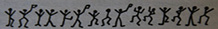
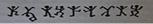
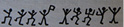
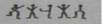
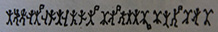
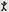
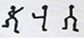
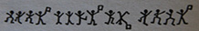

Boş Ev
1894 baharında saygıdeğer Bay Ronald Adair’in olağandışı ve anlaşılmaz koşullar altında öldürülmesi, tüm Londra ahalisinin dikkatini çekmiş, sosyete dünyasını ise dehşete düşürmüştü. Halk, polis soruşturması sırasında ortaya çıkan birçok ayrıntıyı öğrenmişti ancak kovuşturma için açılan dava öylesine eziciydi ki kanıtların önemli bir miktarı saklanmış ve tüm gerçekleri ortaya çıkarmak gerekli görülmemişti. Ancak şimdi, yani olayın üzerinden geçen yaklaşık on yılın sonunda, zinciri oluşturan kayıp halkaları bulmama izin veriliyor. Suç zaten başlı başına ilgi çekiciydi, fakat bu ilginçlik macera dolu ömrümde başımdan geçen tüm olaylar arasında en büyük şoku ve sürprizi yaşamama neden olan akıl almaz neticesi ile karşılaştırıldığında hiçbir şeydi. Şimdi bile, aradan geçen onca zamandan sonra, olanları düşünürken titriyor ve zihnimi etkisi altına alan o ani neşe, şaşkınlık ve kuşku dalgasını hissediyorum. Olağanüstü bir adamın düşünce ve eylemlerine dair verdiğim işaretlere ilgi gösteren insanlara bildiklerimi onlarla paylaşmadığım için beni suçlamamaları gerektiğini söylemek isterim. Çünkü ancak geçen ayın üçünde kalkan, bizzat onun dudaklarından çıkan bir yasak tarafından engellenmemiş olsaydım bunu birinci vazifem sayardım.
Suç konusuna beslediğim derin ilginin Sherlock Holmes ile yakınlığım sonucu başladığını ve o ortadan kaybolduktan sonra da kamuyu ilgilendiren çeşitli sorunları dikkatle okumaya devam ettiğimi söylemek yanlış olmaz. Hatta birkaç defa, sırf kendimi tatmin etmek adına bu vakaları çözmek için onun yöntemlerini kullandığım olmuştur ancak başarılı olamamıştım. Yine de bana Ronald Adair’in trajedisi kadar çekici gelen bir vaka hiç olmamıştı. Meçhul kişi ya da kişilerin kasten adam öldürmekten hüküm giymesine yol açacak soruşturma tutanağını okuduğumda, Sherlock Holmes’un ölümü ile toplumun ne kadar büyük kayıp yaşadığını her zamankinden çok anlamıştım. Bu garip vakada ona özellikle çekici gelecek birçok husus bulunduğuna emindim ve Avrupa’nın ilk dedektifinin eğitimli gözlemleri ve uyanık zekâsı, polisin gayretlerine katkı sağlayacak ve hatta onlardan daha önce davranacaktı. Gün boyu yaptığım turlarda meseleyi zihnimde evirip çevirdiysem de bana yeterli gelen herhangi bir açıklama bulamadım. Önceden anlatılmış bir hikâyeyi tekrar dile getirmenin riskini göze alarak, soruşturma sonucunda halkın da haberdar olduğu gerçekleri yeniden özetlemek istiyorum.
Saygıdeğer Ronald Adair, o zamanlar Avustralya kolonilerinden birinin valisi olan Maynooth Kontu’nun ikinci oğluydu. Adair’in annesi katarakt ameliyatı için Avustralya’dan geri dönmüştü. O, oğlu Ronald ve kızı Hûda ile birlikte Park Yolu 427 numarada oturuyorlardı. Genç adamın, yaşadığı yüksek sosyete içinde, bilindiği kadarıyla herhangi bir düşmanı ya da kötü bir alışkanlığı yoktu. Carstairs’ten Bayan Edith Woodley’le nişanlanmış, ancak nişan birkaç ay önce karşılıklı anlaşmayla bozulmuştu ve bu olayın da arkasında derin duygular bıraktığına dair herhangi bir işaret yoktu. Sakin ve duygusuz bir yapıya sahip olduğundan, genç adamın hayatı çoğunlukla dar ve sıradan bir çevrede geçiyordu. Buna karşın, ölüm bu genç ve rahat aristokrata, 30 Mart 1894 gecesi saat on ile on bir buçuk arası, olabilecek en garip ve beklenmedik şekilde gelmişti.
Ronald Adair kâğıt düşkünü biri olarak sürekli oynardı fakat hiçbir zaman zararlı olabilecek yüksek potlar koymazdı. Baldwin, Cavendish ve Bagatelle oyun kulüplerinin üyesiydi. Öldüğü günün akşamında, yemekten sonra Bagatelle kulübünde bir el vist oynamış olduğu ortaya çıkmıştı. Aynı kulüpte öğleden sonra da oynamıştı. Birlikte oynadığı Sör John Hardy ve Albay Moran ifadelerinde vist oynandığını ve kâğıtların hemen hemen eşit dağıtılmış olduğunu belirtmişti. Adair beş pounddan fazla kaybetmiş olamazdı. Muazzam bir servete sahipti ve böylesi bir kayıp onu hiçbir biçimde etkilemezdi. Zaten neredeyse her gün kulüplerden birinde oynardı, fakat dikkatli bir oyuncu olduğu için masadan çoğunlukla kazançlı kalkardı. Hatta şahitlerin ifadelerine göre birkaç hafta önce Albay Moran’la ortak olduğu bir oyunda Godfrey Milner ve Lord Balmoral’dan dört yüz yirmi sterlin kazanmışlardı. Soruşturmada ortaya çıktığı kadarıyla yakın tarihte olanlar bunlardan ibaretti.
Cinayet akşamı kulüpten saat tam onda dönmüştü. Annesi ve kız kardeşi bir akrabalarının yanındaydı. Hizmetçi, genç adamın, genellikle oturma odası olarak kullanılan ikinci kattaki bir odaya girdiğini duyduğunu belirtmişti. Beyefendi eve gelmeden önce o odadaki şömineyi yakmış ve içeriye duman dolunca pencereyi açmıştı. Leydi Maynooth ve kızı saat on bir yirmide eve dönene kadar odadan hiç ses gelmemişti. Leydi Maynooth, iyi geceler dilemek amacıyla oğlunun odasına girmek istemiş ancak kapının içeriden kilitlendiğini fark etmişlerdi. Kapıyı çalmalarına ve bütün bağırışlara karşın içeriden bir cevap gelmemişti. Hemen yardım çağırılarak kapı kırılmış, içeri girdiklerinde ise zavallı genç adamı masanın yanında yerde yatarken bulmuşlardı. Başı bir tabancadan çıkan kurşunun dağılmasıyla deforme olmuştu ancak odada herhangi bir silah da bulunamamıştı. Masanın üzerinde on poundluk iki banknot ve çeşitli miktarlarda düzenlenmiş küçük yığınlar halinde gümüş ve altın on yedi poundluk bozukluk duruyordu. Aynı zamanda, üzerinde kulüpten bazı arkadaşlarının isimleri ile karşısında rakamların yazılı olduğu bir de kâğıt vardı. Tüm bunlar ölmeden önce, oyunlardaki kazanç ve kayıplarını hesaplamaya çalıştığını gösteriyordu.
Ayrıntılar üzerinde yapılacak ufak bir inceleme bile meseleyi daha da karmaşık hale getiriyordu. Öncelikle, genç adamın kapıyı içeriden kilitlemesinin gerekçesi anlaşılamamıştı. Bunu katil yapmış ve daha sonra pencereden kaçmış olabilirdi. Ancak bunu başarması için en az yedi metrelik bir atlayış yapması gerekiyordu. Aşağıda ise bütünüyle çiçek açmış bir çiğdem tarhı vardı ve ne çiçeklerde ne de toprakta herhangi bir ezilmeye, evi yoldan ayıran dar çimenlikte de herhangi bir ayak izine rastlanmamıştı. Kapıyı içeriden bizzat genç adamın kilitlemiş olduğu açıktı. Peki, ölüm ona nasıl uğramıştı? O pencereye herhangi bir iz bırakmadan kimse tırmanamazdı. Birinin pencereden ateş ettiği farz edilse bile, bir tabanca ile ölümcül yaranın açılmış olması için gerçekten olağanüstü bir atış yapılması gerekiyordu. Üstelik Park Yolu işlek bir yerdi ve evin yüz metre kadar ilerisinde bir taksi durağı vardı. Kimse silah sesi de duymamıştı. Yine de ortada ölü bir adam ve bir tabanca mermisi vardı. Mermi, yumuşak uçlu türlerde görüleceği gibi vücuda girer girmez dağılmış ve ani bir ölüme neden olan ciddi bir yara açmıştı. Park Yolu gizeminin ayrıntıları bu şekildeydi ve görünürde bir cinayet nedeninin olmaması durumu daha da karmaşıklaştırıyordu çünkü daha önce de söylediğim gibi genç Adair’in bilinen bir düşmanı yoktu, ayrıca odasından herhangi bir kıymetli eşya veya para alınmamıştı.
Bütün günümü bu koşulları kafamda evirip çevirmekle, hepsini bağdaştıran bir teori oluşturmaya çabalamakla ve zavallı dostumun dediği gibi, her araştırmanın başlangıç noktasını meydana getiren en az dirençli noktayı bulmaya çalışmakla geçirmiştim. Çok fazla ilerleyemediğimi itiraf etmeliyim. Akşam olunca parkta biraz dolaşmaya çıktım ve saat altı civarı kendimi Park Yolunun Oxford Caddesi ucunda buldum. Kaldırımda durup gözünü bir evin penceresine dikmiş bir grup işsiz güçsüz insan, beni görmeye geldiğim eve yönlendirmiş oldu. Sivil giyimli bir dedektif olduğundan ciddi şekilde kuşkulandığım renkli gözlüklü, uzunca ve zayıf bir adam kendi ürettiği teorisinden bahsederken, kalabalık da anlattıklarını dinlemek için etrafında toplanıyordu. Adama olabildiğince yaklaştım ama gözlemleri bana öylesine saçma gelmişti ki iğrenerek geri çekildim. Bunu yaparken, arkamda iki büklüm durmakta olan yaşlı bir adama çarptım ve elindeki kitapları yere düşürdüm. Kitaplarını toplamasına yardım ederken birinin üstünde, ‘Ağaca Tapınmanın Kökeni’ ismini gördüğümü hatırlıyorum. Yaşlı adamın ya tüccar olarak ya da hobisi gereği nadir eserleri toplayan bir kitapsever olduğunu düşünmüştüm. Kaza için özür dilemeye çalışıyordum ama talihsiz biçimde hırpaladığım bu kitapların, sahibinin gözünde çok kıymetli olduğu anlaşılıyordu. Aşağılama dolu bir homurdanmayla topukları üstünde döndü ve son olarak gördüğüm şey kambur sırtı ve beyaz favorileriyle kalabalığın arasında kayboluşu oldu.
Park Yolu 427 numarada yaptığım gözlemler ilgilendiğim sorunu açıklığa kavuşturmakta yetersiz kalmıştı. Ev yoldan, tamamı bir buçuk metreyi geçmeyen alçak bir duvar ve çitlerle ayrılıyordu. Bu durumda herhangi bir kimsenin bahçeye girmesi epey kolaydı ama pencereye ulaşmak mümkün değildi, çünkü tırmanmak için kullanılabilecek ne bir su borusu ne de başka bir şey bulunuyordu. Aklım her zamankinden daha karışık olarak Kensington’ın yolunu tuttum. Çalışma odama varalı beş dakika bile olmamıştı ki hizmetçi kapıda beni görmek isteyen biri olduğunu söylemek için içeri girdi. Gelenin, benim şu ihtiyar, tuhaf, eski kitap koleksiyoncusundan başkası olmadığını gördüğümde hayretler içinde kalakaldım. Beyaz saçlarının arasından sert, kırışık yüzü belli belirsiz görünüyor ve sağ kolunun altında o değerli kitaplarının en az bir düzine kadarı duruyordu.
“Beni gördüğünüze şaşırdınız bayım,” dedi garip, gaklamaya benzer bir sesle.
Söylediğini onayladım.
“Benim de bir vicdanım var bayım ve ağır aksak arkanızdan gelirken şans eseri bu eve girdiğinizi görünce, kendi kendime içeri girip şu kibar beyi göreyim, biraz aksi davranmama rağmen kötü bir niyetimin olmadığını anlatayım ve kitaplarımı toplamama yardım ettiği için ona teşekkür edeyim diye düşündüm.”
“Buraya kadar zahmet etmişsiniz,” dedim. “Peki, kim olduğumu nasıl bildiniz?”
“Ah bayım, ne tesadüf ki komşuyuz. Küçük kitapçı dükkânımı Church Caddesi’nin köşesinde bulabilirsiniz ve sizi orada görmekten mutluluk duyarım. Belki siz de kitap toplarsınız. Yanımda, “İngiliz Kuşları’, ‘Catullus’ ve ‘Kutsal Savaş’ var. Hepsi de kelepir. Bu beş ciltle ikinci raftaki şu boşluğu doldurabilirsiniz. Dağınık görünüyor, öyle değil mi bayım?”
Arkamdaki dolaba bakmak için başımı çevirdim. Tekrar döndüğümde, çalışma masamın öbür ucunda Sherlock Holmes durmuş, gülümseyerek bana bakıyordu. Ayağa fırladım, birkaç saniye şaşkınlık içinde bakakaldım ve sonra da hayatımda ilk ve son kez bayılmış olmalıyım. Gözlerimin önünde beliren gri sis dağıldığında yakamın çözülmüş olduğunu ve dudaklarımdaki sızlamadan brendi içirildiğimi fark ettim. Holmes, elinde bir şişeyle sandalyeme eğilmiş bana bakıyordu.
“Sevgili Watson,” dedi iyi hatırladığım sesiyle, “sana binlerce özür borçluyum. Bu kadar etkileneceğini tahmin etmezdim.”
Koluna sarıldım.
“Holmes!” diye bağırdım. “Gerçekten sen misin? Gerçekten yaşıyor olabilir misin? O korkunç uçurumdan tırmanarak kurtulman mümkün mü?”
“Bir dakika,” dedi. “Bunları tartışacak kadar iyi durumda olduğuna emin misin? Zaten lüzumsuz derecede çarpıcı olan yeniden ortaya çıkışımla sana yeterince ciddi bir şok yaşattım.”
“Ben iyiyim Holmes, ama hala gözlerime inanamıyorum. Yüce Tanrım, hele ki senin çalışma odamda olduğunu düşününce! ”
Yine ceket kolundan kavradım ve altındaki ince, zinde kolu hissettim.
“Hayalet olmadığın kesin,” dedim. “Sevgili dostum, seni gördüğüme çok sevindim. Otur ve o korkunç uçurumdan nasıl canlı kurtulabildiğini anlat.”
Karşıma oturdu ve o eski, kayıtsız tavrıyla bir sigara yaktı. Üstünde kitap tüccarının hırpani redingotu vardı ama kılığının geri kalan parçaları beyaz saç ve eski kitaplar yığını halinde masanın üzerinde duruyordu. Holmes eskisinden daha zayıf ve sert görünüyordu ve ince yüzündeki ölü beyazı ton bana son zamanlarda pek de sağlıklı yaşamadığını anlatıyordu. “Gerinebildiğim için çok mutluyum Watson,” dedi. “Uzun boylu birinin sürekli olarak, boyundan 30 santim daha kısa bir şekilde durması ciddi bir iş. Şimdi, sevgili dostum, bu açıklamalar konusunda, eğer benimle işbirliği yapacaksan, önümüzde çok zor ve tehlikeli bir gece olduğunu söylemeliyim. Belki de, olanları bu işi hallettikten sonra anlatsam daha iyi olacak.”
“Ama çok merak ediyorum. Hemen şimdi dinlemeyi tercih ederim.”
“Bu gece benimle gelecek misin?”
“Ne zaman ve nereye istersen gelirim.”
“Tıpkı eski günlerdeki gibi. Gitmeden önce akşam yemeği için bir şeyler yemeye vaktimiz var. Pekâlâ, şu uçurumu anlatayım o zaman. Evet, oradan kurtulmam hiç zor olmadı çünkü içine düşmemiştim.”
“Düşmemiş miydin?”
“Hayır, Watson hiç düşmedim. Bıraktığım not ise hakikati anlatıyordu. Kurtuluşa giden dar patika üzerinde Profesör Moriarty’nin o uğursuz siluetini gördüğümde kariyerimin sonuna geldiğimden hiç şüphem yoktu. O gri gözlerinde amansız bir azim görmüştüm. Bir süre konuştuktan sonra eline geçen o kısa notu yazmama izin verdi. Yanına sigara kutum ve bastonumu da bıraktım ve önde ben arkada Moriarty patikada yürümeye başladık. Patikanın sonuna geldiğimde kaçacak yerim kalmamıştı. Moriarty silah çekmedi, ama uzun kollarıyla üzerime çullandı. Oyunun sonuna geldiğinin farkındaydı ve tek düşüncesi benden intikam almaktı. Şelalenin kenarında sendeleyerek ilerlemeye başladık. Ben, daha önce de birkaç kez işime yarayan, baritsudan yani Japon güreş tekniğinden biraz anlarım. Ellerinden kurtuldum. O ise korkunç bir çığlık atarak birkaç saniye debelendi ve her iki eliyle de boşluğa tutunmaya çalıştı. Bütün çabalarına rağmen dengesini sağlayamadı ve düştü. Şelalenin kenarından uzun uçurum boyunca düşüşünü izledim. Aşağıda bir kayaya çarparak sıçradı ve sonra da suya düştü.”
Holmes’un arada sigarasının dumanını üfleyerek anlattığı bu hikâyeyi hayretler içerisinde dinliyordum.
“Peki ya izler!” diye bağırdım. “Kendi gözlerimle gördüm. Patikadan aşağı sadece iki iz gidiyor ve ikisi de geri dönmüyordu.”
“O da şöyle oldu. Profesörün gözden kaybolduğu an, talihin bana bundan daha olağanüstü bir fırsat sunamayacağını fark ettim. Beni öldürmeye yeminli tek kişinin Moriarty olmadığını biliyordum. Liderlerinin ölümüyle intikam hırslarının daha da artacağından emin olduğum en az üç kişi daha vardı. Hepsi de son derece tehlikeli adamlardı. İçlerinden biri beni mutlaka yakalardı. Öte yandan bütün dünya öldüğüme ikna olursa bu adamlar da kendilerini özgür hissedecek ve kendilerini açık edeceklerdi ve er ya da geç ben de onları yok edebilecektim. Daha sonrasında ise hala hayatta olduğumu açıklayabilirdim. Beyin öylesine hızlı çalışıyor ki, sanırım bütün bunları Profesör Moriarty, Reichenbach Şelalesi’nin dibine varmadan düşünmüş olmalıyım.
“Ayağa kalktım ve arkamdaki kayalık duvarı incelemeye koyuldum. Birkaç ay sonra büyük ilgiyle okuduğum meseleyle ilgili pitoresk hikâyende duvarın pürüzsüz olduğunu söylemişsin. Bu tam olarak doğru değildi. Ayağımı basabilecek birkaç yer ve bir çıkıntı olduğunu gördüm. Kayalık öylesine yüksekti ki tırmanmak imkânsızdı ve ıslak patikada iz bırakmadan yürümek de mümkün değildi. Daha önce de benzer durumlarda yaptığım gibi çizmelerimi ters giyebilirdim elbette ama aynı yöne giden üç ayak izi bunun bir kandırmaca olduğunu düşündürürdü. Her şey hesaba katıldığında en iyisi tırmanma riskini göze almaktı. Bu hiç de hoş bir iş değildi, Watson. Şelale altımda gürüldüyordu. Pek hayalperest biri değilimdir, ama inan bana, bir an için Moriarty’nin uçurumdan bana seslenen çığlıklarını duyar gibi oldum. En ufak bir hatanın ölümcül sonuçları olurdu. Tutunduğum otların tutamlar halinde elimde kaldığı ya da ayaklarımın da kayanın ıslak çentiklerinde kaydığı zamanlarda sonumun geldiğini düşündüm. Ama tüm gayretimle tırmanmayı sürdürdüm ve sonunda birkaç metre genişliğinde, yumuşak yeşil yosunlarla kaplı bir çıkıntıya ulaştım. Orada görünmeden rahatça saklanabilirdim. Sen, sevgili dostum Watson, diğerleriyle birlikte ölümümün ayrıntılarını iyi niyetli ama yetersiz bir şekilde incelerken ben yukarıda yatıyordum.
“Sonunda, siz o kaçınılmaz ve her bakımdan hatalı sonuçlara varıp otele dönünce ben de yalnız kalmış oldum. Maceralarımın sonuna geldiğimi düşünüyordum ki hiç umulmadık bir olay, beni başka sürprizlerin de beklediğini gösterdi. Yukarıdan yuvarlanan irice bir kaya gümbürdeyerek yanımdan geçti, patikaya çarparak oradan da uçuruma düştü. Bir an için bunun bir kaza olduğunu düşündüm, ama yukarı bakınca kararmakta olan gökyüzünün önünde birileri olduğunu gördüm ve bulunduğum çıkıntıya doğru bir taş daha atıldı ve başımın birkaç santim yanından geçti. Bunun elbette ki basit bir açıklaması vardı. Moriarty yalnız değildi. Bir suç ortağı – ve bir kez bakmam bile ne kadar tehlikeli olduğunu anlamama yetmişti – Profesör bana saldırdığında gözcülük etmişti. Benim göremediğim uzak bir yerden dostunun ölümüne ve benim kaçışıma şahit olmuştu. Biraz beklemiş, sonra tepeye çıkarak ortağının bitiremediği işi tamamlamaya gayret etmişti.
“Olanları anlamam uzun sürmedi Watson. Kayalıkların üzerindeki o karanlık yüzü tekrar görünce, bunun başka bir taşın habercisi olduğunu biliyordum. Patikaya geri dönmek için büyük bir gayret içine girdim. Bunu sakin bir anımda yapabileceğimi sanmıyorum. İnmek tırmanmaktan yüz kat daha zordu. Ama tehlikeyi düşünmeye vaktim yoktu, zira ellerimle çıkıntının kenarına asılı dururken yanımdan bir taş daha geçti. Yolun yarısında kaydım ama Tanrıya şükür çizikler ve kanlar içinde olsa da patikaya indim. O karanlıkta dağda on millik patikayı geçerek kaçtım ve bir hafta sonra da kendimi Floransa’da buldum. Artık kimsenin başıma ne geldiğini bilmediğinden emindim.
“Güvenebileceğim tek bir insan vardı; kardeşim Mycroft. Sana bu konuda özür borçluyum Watson, ama ölmüş olduğumun düşünülmesi gerekiyordu ve şurası kesin ki, bunun doğruluğunu kabullenmemiş olsaydın talihsiz sonumla ilgili o kadar ikna edici bir hikâye kaleme alamazdın. Son üç yılda birçok kez sana yazmak için kalemi elime aldım ama her seferinde bana karşı sevgi dolu tutumunu düşünüp bir hata yaparak sırrımı açığa çıkarmandan korktum. Aynı sebepten, bu akşam kitaplarımı düşürdüğünde de senden uzaklaştım çünkü o an için tehlike altındaydım ve herhangi bir şaşkınlık ya da duygusallık gösterseydin, gerçek kimliğime dikkat çekecek ve hazin ve onarılması zor sonuçlara neden olacaktı. Mycroft’a gelince, ihtiyacım olan parayı bulmak için ona güvenmek zorundaydım. Londra’da işler umduğum gibi gitmemişti çünkü Moriarty çetesi davası sonunda çetenin en tehlikeli iki üyesi, yani en azılı düşmanlarım serbest kalmıştı. Bu yüzden iki yıl boyunca Tibet’te dolaştım ve vaktimi Lhasa’yı ziyaret ederek baş Lamayla birkaç gün geçirerek harcadım. Sigerson isimli bir Norveçlinin dikkat çekici keşiflerini belki sen de okumuşsundur, ama bunların dostundan haberler olduğunu asla anlamadığından eminim. Daha sonra İran üzerinden Mekke’ye geçtim ve Hartum’da bulanan Halifeye kısa ama ilginç bir ziyarette bulundum ve sonuçlarını da Dış İşleri Bakanlığına bildirdim. Fransa’ya döndükten sonra, güneyde Montpellier’deki bir laboratuarda kömür katran türevleri üzerine bir araştırma yaparak birkaç ay geçirdim. Bunu da tatmin edici biçimde sonuçlandırdıktan ve Londra’da düşmanlarımdan sadece birinin kaldığını öğrendikten sonra ise hali hazırda geri dönmeye hazırlanıyordum. Bu sırada Park Yolu’ndaki dikkat çekici vakanın ortaya çıkışıyla hazırlıklarımı hızlandırdım. Vaka yalnızca kendine has değerinin yanı sıra kişisel bazı fırsatlar sunuyor olması nedeniyle de çekici geliyordu bana. Vakit kaybetmeden Londra’ya geldim, kimliğimi gizlemeden Baker Caddesi’ne gittim, Bayan Hudson’un şiddetli histeriler geçirmesine neden oldum ve Mycroft’un odalarımı ve belgelerimi her zaman oldukları şekilde muhafaza ettiğini gördüm. İşte böyle sevgili Watson, bugün saat ikide kendimi eski odamda, eski koltuğumda buldum ve tek dileğim karşımdaki koltuğu süsleyen eski dostum Watson’ı görmekti.”
O Nisan akşamı dinlediğim o çarpıcı hikâye işte böyleydi. Bir daha asla göremeyeceğimi düşündüğüm o uzun, ince endam ve sert ve meraklı yüz tarafından doğrulanmasa, kesinlikle inanamayacağım o hikâye. Bir şekilde yokluğunda yaşadığım matemi öğrenmişti ve üzüntüsünü sözleriyle değil, tavrıyla belli ediyordu.
“Kederin en iyi panzehiri çalışmaktır sevgili Watson,” dedi “ve bu gece elimde ikimiz için, başarıyla sonuçlandırabilirsek bu gezegendeki bir insanın hayatını kurtaracağımız bir iş var.” Daha fazlasını anlatması için boşuna yalvarmıştım. “Sabah olmadan yeterince şey öğreneceksin,” diye cevap verdi. “Daha hakkında konuşacağımız üç yıllık bir geçmiş var. Saat dokuz buçuğa yani boş evle ilgili şu unutulmaz maceraya atılacağımız zamana kadar anlattıklarımın bu kadarı yeterli olsun.”
Gerçekten de tıpkı eski günlerdeki gibiydi. Tam o saatte kendimi arabada onun yanında otururken bulmuştum. Tabancam cebimdeydi ve maceranın heyecanını kalbimde hissediyordum. Holmes, sert, ciddi ve sessizdi. Sokak lambalarının ışığı sert yüz hatlarına vurdukça kaşlarının düşünceli biçimde çatıldığını ince dudaklarının sımsıkı kapalı olduğunu görebiliyordum. Londra’nın karanlık suç ormanından ne tür vahşi bir hayvan avlamak üzere olduğumuzu bilmiyordum ama bu usta avcının görünüşünden, önemli bir maceraya atıldığımızı, o sofu kasveti delerek ara sıra beliren alaycı gülümseme nedeniyle de araştırmamızda az da olsa bir umut olduğunu anlayabiliyordum.
Baker Caddesi’ne gideceğimizi düşünmüştüm ancak Holmes arabayı Cavendish Meydanı’nın köşesinde durdurdu. Arabadan iner inmez sağına soluna dikkatle bakındığına, her sokak köşesinde, takip edilmediğinden emin olmak için adeta kıvrandığını fark etmiştim. Tuhaf bir rotamız vardı. Holmes, Londra ara sokakları hakkında muazzam bilgiye sahipti. Bu kez aralarından hızlı ve emin adımlarla geçtiği otlak ve ahırların varlığından o zamana dek haberim bile yoktu. Sonunda bizi Manchester Caddesi’ne oradan da Blandford Caddesi’ne götüren eski ve kasvetli evlerin sıralandığı küçük bir sokağa çıktık. Burada, hızla dar bir geçide daldı, ıssız bir bahçeye açılan ahşap bir kapıyı geçti ve sonra bir evin arka kapısını anahtarla açtı. Birlikte içeri girdik ve kapıyı arkamızdan kapattı.
İçerisi zifiri karanlıktı ama buranın boş bir ev olduğunu anlamıştım. Çıplak döşeme, ayaklarımızın altında gıcırdıyor ve çatırdıyor, uzatmış olduğum elim kâğıtlarının şeritler halinde döküldüğü bir duvara değiyordu. Holmes’un soğuk, ince parmakları bileğimden kavrayarak, beni uzunca bir koridor boyunca ilerletti. Nihayet bir kapının üzerinde belli belirsiz bir ışık görmüştüm. Burada Holmes aniden sağa döndü ve kendimizi geniş, kare biçimli, boş bir odada bulduk. Odanın köşeleri gölgede kalmış ama ortası, cadde lambalarının ışığıyla hafifçe aydınlanmıştı. Yakınlarda hiç lamba yoktu ve pencere kalın bir tozla kaplıydı bu nedenle de içeride birbirimizden başka bir şey göremiyorduk. Dostum elini omzuma koydu ve dudaklarını kulağıma yaklaştırdı.
“Nerede olduğumuzu biliyor musun?” diye fısıldadı.
“Baker Caddesi’nde olduğumuz kesin,” diye cevap verdim, bulanık pencereden dışarı bakarak.
“Doğru. Eski evimizin tam karşısında duran Camden Malikânesindeyiz”
“Peki, neden buradayız?”
“Çünkü buradan pitoresk yığınların manzarasını kusursuz biçimde görebiliriz. Görünmemeye çok dikkat ederek pencereye biraz daha yaklaşmanı ve – küçük maceralarımızın birçoğunun başlangıç noktası olan – eski odalarımıza bakmanı rica edebilir miyim senden, Watson? Üç yıl ortalıkta olmamam seni şaşırtma gücümü azaltmış mı bir görelim.”
İlerledim ve karşıda duran o tanıdık pencereye baktım. Bakar bakmaz nefesim kesilerek şaşkınlık içinde bağırdım. Tül kapalıydı ve odada güçlü bir ışık yanıyordu. Sandalyede oturan bir adamın gölgesi pencere üzerindeki aydınlık perdenin sert, kara çerçevesine vuruyordu. Başın duruşuna, köşeli omuzlara ve keskin hatlara bakınca kim olduğunu anlamamak mümkün değildi. Yüzü pencereye doğru yarı dönmüş vaziyetteydi ve ortaya çıkan sonuç atalarımızın resmetmeyi sevdiği türden karanlık bir siluetti. Holmes’un kusursuz bir taklidiydi bu. O kadar şaşırmıştım ki adamın gerçekte yanımda durduğundan emin olmak için elimi ona doğru uzattım. Sessiz kahkahalar atarak titriyordu.
“Ne diyorsun?” dedi.
“Yüce Tanrım!” diye bağırdım. “Harika olmuş.”
“Ne yıllar yıpratır ne de alışkanlıklar bozar sonsuz hayal gücümü,” dedi, sesinde sanatçının kendi eserinden duyduğu sevinç ve gurur vardı.
“Gerçekten de bana benziyor, değil mi?”
“Sen olduğuna yemin edebilirdim.”
“Beğeniler Grenoble’dan Bay Oscar Meunier’in hakkı. Bu heykeli yapmak için birkaç gün uğraştı. Balmumundan bir büst. Gerisini de akşam Baker Caddesi’ne uğradığımda ben ayarladım.”
“Peki, ama niye?”
“Çünkü sevgili Watson, bazı insanların, aslında başka bir yerdeyken orada olduğumu sanmaları gerekiyor.”
“Odaların gözetlendiğini mi düşünüyorsun?”
“İzlendiğinden EMİNİM.”
“Kim tarafından?”
“Eski düşmanlarım tarafından, Watson. Liderleri, Reichenbach Şelalesi’nde yatan o pek büyüleyici topluluk tarafından. Benim hayatta olduğumu bir tek onlar biliyor, bunu unutma. Er ya da geç evime geri döneceğimi tahmin ediyorlardı. Böyle düşünerek evi sürekli gözlem altında tuttular ve bu sabah geldiğimi gördüler.”
“Bunu nereden biliyorsun?”
“Çünkü pencereden dışarı bakınca nöbetçilerini tanıdım. Çekirdekten yetişme bir cellât ve ağız tamburası çalma konusunda usta olan Parker adında zararsız sayılabilecek bir adam. Onu fazla umursamıyorum. Ama arkasındaki korkunç adamdan çekinmek için pek çok nedenim var. Moriarty’nin can dostu, tepeden üzerime kayalar yuvarlayan adam ve aynı zamanda Londra’daki en kurnaz ve tehlikeli suçlu. Bu gece peşimde olan kişi de oydu Watson ve aslında bizim ONUN peşinde olduğumuzun farkında değil.”
Dostumun planları yavaş yavaş ortaya çıkıyordu. Bu güvenli inzivadan gözcüler gözetleniyor ve takipçiler de takip ediliyordu. Yukarıdaki gölge yem ve bizler de avcılardık. Karanlıkta sessizce durup önümüzden aceleyle geçip duran gölgeleri izliyorduk. Holmes sessiz ve hareketsizdi ama tetikte olduğunu ve gözlerinin önümüzden geçenlerin üzerine sabitlendiğini söyleyebilirdim. Soğuk ve patırtılı bir geceydi ve rüzgâr uzun sokak boyunca ıslık çalarak esiyordu. Çoğu palto ve eşarplarına sarınmış insanlar bir aşağı bir yukarı hareket ediyordu. Bir ya da iki kez, gördüğüm kişileri birden çok kez gördüğüm hissine kapılmıştım. Özellikle de sokağın biraz yukarısında, rüzgârdan korunmak için bir evin kapısında bekliyormuş gibi görünen iki adam dikkatimi çekmişti. Dostumun dikkatini onlara yöneltmeye çalıştım ama ufak bir sabırsızlık gösterisinden sonra sokağa bakmayı sürdürdü. Birkaç kere huzursuzca ayaklarını oynatıyor ya da parmaklarını aniden duvara vuruyordu. Endişe duymaya başladığını planının umduğu gibi gitmediğini anlamıştım. Nihayet gece yarısı yaklaşırken sokak yavaş yavaş boşalıyordu. Holmes kontrolsüz bir şekilde odada bir ileri bir geri yürüyordu. Tam ona bir şeyler söylemek üzereydim ki, gözlerimi aydınlık pencereye çevirdiğimde en az daha önceki kadar şaşırtıcı bir sürpriz yaşadım. Holmes’u kolundan tutarak yukarıyı işaret ettim.
“Gölge hareket etmiş!” diye bağırdım.
Bize doğru bakan kısım, heykelin profilinin gölgesi değil, sırtıydı artık.
Geçen üç yıl, yerine daha az işleyen bir zekâ koyarak Holmes’un mizacı ve sabırsızlığındaki sertliği hafifletmeyi başaramamıştı.
“Elbette ki hareket edecek,” dedi. “Sence ben oraya oyuncak olduğu bariz belli bir manken dikip Avrupa’nın en kurnaz adamlarından birinin bu numarayı yutmasını bekleyecek kadar beceriksiz bir sakar mıyım Watson? İki saattir bu odadayız ve Bayan Hudson her çeyrek saatte bir yani tam sekiz kez büstün duruşunu değiştirdi. İşi önden yaptığı için gölgesi görünmüyor. Ah!” Bir an için tiz bir çığlıkla nefesini tuttu ve heyecanla tekrar nefes aldı. Loş ışıkta başını ileri uzattığını, dikkatten kaskatı kesildiğini görmüştüm. Cadde bütünüyle boşalmıştı. O iki adam halen kapı aralığında saklanmış olabilirlerdi ama onları artık göremiyordum. Ortasındaki karanlık siluetle önümüzde parlayan sarı perde dışında her yer karanlık ve hareketsizdi. Sessizlikte dostumdan gelen o bastırılmış heyecan dolu tiz, ıslıksı çığlığı tekrar duydum. Hemen sonra beni odanın en karanlık yerine çekti ve dudaklarıma kapattığı elini hissettim. Kolumu kavrayan parmakları titriyordu. Dostumu daha önce hiç böyle gördüğümü hatırlamıyorum. Oysa önümüzdeki karanlık sokak halen ıssız ve hareketsizdi. Ama aniden, Holmes’un keskin algılarıyla çoktan fark ettiği şeyi ben de duydum. Kulaklarıma alçak, kaçamak bir ses gelmişti ve bu ses Baker Caddesi yönünden değil, gizlendiğimiz evin arka tarafından geliyordu. Bir kapı açılıp kapandı. Hemen sonra ise – aslında bu denli yüksek duyulmaması gereken fakat ev boş olduğundan her yerde yankılanan – ayak sesleri duyuldu. Holmes çömelip duvara yaslanınca ben de aynısını yaptım. Elim tabancamın kabzasını tutuyordu. Loşluğu delen gözlerim, bir adamın belli belirsiz hatlarını gördü. Açık duran kapının karanlığından daha karanlık bir gölgeydi bu. Adam bir anlığına durdu ve daha sonra tehditkâr bir tavırla arada bir de çömelerek, emekleme pozisyonunda yavaşça odaya doğru ilerledi. Bu uğursuz gölge üç metre yakınımıza kadar gelince hamlesine karşılık vermeye hazırlandım fakat aslında varlığımızdan haberi olmadığını anlamam uzun sürmedi. Yanımızdan geçip pencereye yöneldi ve epey yumuşak ve gürültüsüz bir şekilde pencereyi hafifçe kaldırdı. Açılan pencere ile aynı seviyeye geldiğinde tozlu pencerenin artık bulanıklaştırmadığı sokak ışığı yüzünü aydınlatmıştı. Çok heyecanlı görünüyordu. Gözleri yıldız gibi parlıyordu, yüz hatlarıysa heyecandan kasılmıştı. İnce, kemerli bir burnu, geniş ve çıplak bir alnı, gür ve kırlaşmış bir bıyığı olan yaşlıca bir adamdı. Başındaki silindir şapka geriye doğru itilmişti ve açık paltosundan frakının içine giydiği gömlek parlıyordu. Derin ve keskin çizgilerle dolu, ince, esmer bir yüzü vardı. Elinde, bastona benzer bir şey taşıyordu ancak onu yere bırakınca metalik bir çınlama duyuldu. Sonra paltosunun cebinden irice bir şey çıkardı ve bir vida ya da yayın yerine oturmasına benzer yüksek, keskin bir tıkırtı duyulana kadar da bu nesneyle meşgul oldu. Dizlerinin üzerinden kalkmadan öne doğru eğilip bütün ağırlığını ve gücünü bir kaldıraca verince yine önceki gibi uzun, dönme, öğütme sesine benzer güçlü bir tıkırtı duyuldu. Sonra tekrar doğruldu ve elinde biçimsiz bir dipçiği olan bir tür silah tuttuğunu gördüm. Silahın arkasını açıp içine bir şeyler doldurdu ve şaklatarak kapattı. Ardından çömelerek namlunun ucunu pencerenin açık kısmına yerleştirdi. Uzun bıyığının silahın arka kısmına eğildiğini ve nişan alırken gözlerinin parladığını görüyordum. Kabzayı omzuna bastırıp namlunun ucunda bütün açıklığıyla duran o heyecan verici hedefi, sarı zemin üzerindeki siyah gölgeyi görünce memnuniyetle iç çektiğini duymuştum. Bir an için hiç kımıldamadan hareketsiz durdu. Sonra parmağı tetiğe uzandı. Yüksek, tuhaf bir vızıltı ve kırılan camın uzun, gümüşsü çınlaması duyuldu. Holmes o anda tıpkı bir kaplan gibi nişancının sırtına atladı ve adamı yüz üstü yere serdi. Adam hemen doğrularak çırpınmanın verdiği güçle Holmes’un boğazına sarıldı. Ama ben ileri atılıp tabancamın kabzasıyla başına vurunca tekrar yere düştü. Üzerine çullandım ve onu tutarken dostum tiz bir ıslıkla işaret verdi. Kaldırımda koşuşturma sesleri duyuldu ve sonra üniformalı iki polis, yanlarında sivil kıyafetli bir Müfettişle ön kapıdan içeri dalıp odaya girdi.
“Siz misiniz Lestrade?” diye sordu Holmes.
“Evet, Bay Holmes. İşi kendim üstlendim. Sizi yeniden Londra’da görmek çok güzel bayım.”
“Sanırım biraz gayrı resmi yardıma ihtiyacınız var. Bir yıl içinde çözülememiş üç cinayet epey fazla Lestrade. Ama Molesey gizemini çok da zorlanmadan çözmüşsünüz. Yani, epey başarılıydınız.”
Hep birlikte kalktık. İki yanından güçlü kuvvetli birer adamın tuttuğu mahkûmumuz güçlükle nefes alıyordu. Sokakta birkaç aylak toplanmaya başlamıştı. Holmes pencereye doğru ilerledi, pencereyi ve panjurları kapattı. Lestrade iki mum ve polisler de fenerlerini çıkardı. Nihayet mahkûmumuzu yakından görebilecektim.
Bize dönük olan bu yüz son derece erkeksi ve uğursuzdu. Bir filozofun alnına ve bir şehvet düşkününün çenesine sahip olan bu adamın hem iyiye hem de kötüye yatkınlığı olmalıydı. Ama zalim mavi gözlerine, sarkık, alaycı göz kapaklarına, öfkeli, saldırgan burnuna ve tehditkâr, derin çizgili alnına bakan biri doğanın en bariz tehlike sinyallerini görmeden de edemezdi. Hiçbirimize aldırmıyor, nefret ve şaşkınlığın aynı derece harmanlandığı bir ifadeyle dosdoğru Holmes’un yüzüne bakıyordu.
“Seni iblis!” diye homurdanıyordu. “Seni kurnaz iblis!”
“Ah Albay!” dedi Holmes, bozulmuş yakasını düzeltirken. “Şu eski piyeste ne derler bilirsiniz: ‘Tüm yolculuklar âşıkların kavuşmasıyla biter.’ Sanırım Reichenbach Şelalesi’ndeki o kayalıkta bana yaptığınız iyilikten beridir sizi görme zevkine erişemedim.”
Albay transa geçmiş gibi dostuma bakmaya devam ediyor, “Seni kurnaz iblis!” demeyi sürdürüyordu.
“Sizi tanıştırmadım,” dedi Holmes. “Baylar bu, bir zamanlar Majestelerinin Hindistan Ordusu’nda ve Doğu İmparatorluğumuzun büyük havyan avında görev yapmış olan Albay Sebastian Moran. Yanlışsam beni düzeltin, ama kaplan avınız hala rakipsizdir öyle değil mi Albay?”
Öfkeli, yaşlı adam hiçbir şey söylemeden dostuma bakmayı sürdürdü. Vahşi gözleri ve sert bıyıklarıyla bizzat kendisi bir kaplana benziyordu.
“Benim basit kurnazlıklarımın, sizin gibi tecrübeli bir shikariyi1 kandırması hayret verici,” dedi Holmes. “Bunlara aşina olmalıydınız. Küçük bir çocuğu bir ağaca bağlayıp, tüfeğinizle ağaçta pusuya yatıp kaplanın yeme gelmesini beklemiyor muydunuz? Bu boş ev benim ağacım ve siz de kaplamınsınız. Başka kaplanların da gelmesi ya da ufak da olsa hedefi vuramama ihtimaline karşı yedekte silahlarınız da vardı öyle değil mi? Bunlar da,” dedi etrafı göstererek, “benim öbür silahlarım. Benzerlik mükemmel.”
1 Büyük av hayvanı avlayan kişi ÇN
Albay Moran hiddetle homurdanarak ileri atıldı ama polisler onu geri çekti. Yüzünde korkunç bir öfke belirmişti.
“Ama bana küçük bir sürpriz yaşattığınızı itiraf etmeliyim,” dedi Holmes. “Sizin de bu boş evi ve bu elverişli ön pencereyi kullanabileceğinizi düşünmemiştim. İşinizi dostum Lestrade ve saygıdeğer adamlarının sizi bekledikleri sokakta halledeceğinizi sanmıştım. Ama bu istisna dışında her şey beklediğim gibi gelişti.”
Albay Moran dedektif Lestrade’e döndü.
“Beni tutuklamak için sebepleriniz vardır ya da yoktur,” dedi, “ama bu adamın alaylarına maruz kalmamı gerektirecek hiçbir neden göremiyorum. Eğer kanunun elindeysem her şey yasal yollardan halledilmeli.”
“Evet, bu yeterince makul,” dedi Lestrade. “Gitmeden önce söylemek istediğiniz başka bir şey var mı Bay Holmes?”
Holmes yerden havalı tüfeği almış mekanizmasını incelemeye koyulmuştu.
“Hayranlık uyandıran, eşsiz bir silah,” dedi. “Sessiz ve inanılmaz derecede güçlü. Kör Alman mekanikçi Von Herder’in bunu Profesör Moriarty için yaptığını biliyordum. Yıllardan beridir varlığından haberim vardı ama elime alma fırsatı bulamamıştım. Bunu ve mermilerini size emanet ediyorum Lestrade.”
“Onlara iyi bakacağımıza inanın Bay Holmes,” dedi Lestrade, ekip kapıya yönelirken. “Söyleyeceğiniz başka bir şey var mı?”
“Onu neyle suçlamayı düşünüyorsunuz?”
“Neyle mi suçlayacağız? Elbette ki Bay Sherlock Holmes’u öldürmeye teşebbüs.”
“Öyle değil Lestrade. Bu meselenin içinde bulunmayı hiç istemem. Sizin sonuçlandırdığınız bu göz alıcı tutuklamanın bütün övgüleri de size, yalnızca size ait olmalı. Evet, Lestrade, sizi kutlarım! Onu, her zamanki kurnazlık ve cesaretinizin yarattığı mutlu karışımla yakaladınız.”
“Onu yakaladım mı? İyi de kimi yakaladım Bay Holmes?”
“Bütün polis kuvvetlerinin boş yere arayıp durduğu adamı. Saygıdeğer Ronald Adair’i, geçen ayın otuzunda Park Yolu 427 numaradaki evin ikinci katının ön penceresinden havalı tüfekle vuran Albay Sebastian Moran’ı. Suçlama bu Lestrade. Pekâlâ, Watson, kırık pencereden giren soğuk havaya dayanabilirsen, çalışma odamda puro içerek geçireceğimiz yarım saatte epey eğleneceğini tahmin ediyorum.”
Eski odalarımız Mycroft Holmes ile Bayan Hudson’ın gözetimi altında hiç değişmeden kalmıştı. Evet, içeri girdiğimde odanın alışılmadık şekilde derli toplu olduğunu görmüştüm ama eski işaretler de yerli yerindeydi. Kimya köşesi de asit lekeli, çam yüzeyli masa da duruyordu. Yukarıdaki bir rafta, heybetli eskimiş kitaplar ve pek çok ahbabımızın yakmaktan son derece memnun olacağı referans kaynakları bulunuyordu. Etrafa baktığımda taslakları, keman kılıfını, pipo askısını hatta içine tütün konulan Acem terliğini bile görmüştüm. Odada bizi bekleyen iki kişi vardı; ilki içeri girer girmez bize sarılan Bayan Hudson ve diğeri de bu akşamki macerada çok önemli bir rol oynayan garip heykel. Arkadaşıma ait hayranlık uyandıracak derecede iyi yapılan balmumu rengi heykel kusursuz bir kopyaydı. Ufak bir kaideye oturtulmuş, etrafına Holmes’un eski sabahlıklarından biri öylesine düzgün örtülmüştü ki sokaktan bakıldığında oluşturduğu yanılsama kusursuzdu.
“Bütün tedbirlere dikkat ettiğinizi umuyorum Bayan Hudson,” dedi Holmes.
“Ona tıpkı söylediğiniz gibi dizlerimin üzerinde emekleyerek yaklaştım efendim.”
“Mükemmel. Bu işi çok güzel hallettiniz. Peki, merminin nereye gittiğini gördünüz mü?”
“Evet efendim. Korkarım güzel büstünüzü berbat etti, çünkü tam da baş kısmından geçip duvara saplandı. Onu halıda bulup aldım. İşte burada!”
Holmes mermiyi bana uzattı. “Gördüğün gibi yumuşak bir tabanca mermisi Watson. Bunda bir deha gizli çünkü kimse bir havalı tüfekten böyle bir şeyin atılmasını beklemez. Pekâlâ, Bayan Hudson, yardımınız için size minnettarım. Hadi Watson, şimdi seni bir kez daha şu eski koltuğunda göreyim, çünkü konuşmak istediğim birkaç önemli konu var. Hırpani redingotunu çıkarıp büstün üstündeki gri-renkli sabahlığı üzerine geçirdikten sonra yine eski Holmes olmuştu.
“Yaşlı shikarinin ne sinirleri eski sağlamlığını ne de gözleri eski keskinliğini kaybetmiş,” dedi gülerek, büstün parçalanmış alnını incelerken.
“Başın arka kısmının ortasından girmiş ve beynin içine saplanmış. Hindistan’daki en iyi nişancıydı o ve Londra’da ondan daha iyisi tahminimce zor bulunur. Adını hiç duymuş muydun?”
“Hayır duymadım.”
“Ne şöhret ama! Ama yanlış hatırlamıyorsam, sen yüzyılımızın en büyük dâhilerinden Profesör James Moriarty’nin adını da duymamıştın. Şuradaki raftan biyografi fihristimi uzatsana.”
Arkasına yaslanıp purosundan yoğun duman savurarak sayfaları ağır ağır çevirmeye başladı.
“ ‘M harfi koleksiyonum epey iyidir,” dedi. “Herhangi bir harfi ünlü yapmak için bizzat Moriarty bile yeterli olurdu aslında. Bak işte zehirleyici Morgan, berbat anılarım olan Merridew ve Charing Cross’taki bekleme salonunda sol köpek dişimi kıran Mathews da burada. Ve son olarak bu geceki dostumuz da var.”
Defteri bana uzattı ve okumaya başladım:
Moran, Sebastian, Albay. İşsiz. İlk Bangalore Yerleşimcilerinden. 1840 Londra doğumlu. Bir zamanlar İngiltere elçisi olarak İran’a giden Sör Augustus Moran, C.B.’nin2 oğlu. Eton ve Oxford’da eğitim görmüş. Jowaki Seferi, Afgan Seferi, Charasiab, Sherpur ve Kabil’de de hizmet vermiş. Batı Himalayalar’daki Büyük Av Hayvanları (1881) ve ‘Ormanda Üç ay’ (1884) kitaplarının yazarı. Adres: Conduit Caddesi. Kulüpler: Anglo-Hint, Tankerville, Bagatelle Kart Kulübü. Kenara da Holmes’un el yazısıyla şu not düşülmüştü: Londra’daki en tehlikeli ikinci adam.
2 İngiliz yüksek şövalye örgütünün (Order of the Bath) bir rütbesi olan Companion’un kısaltması. ÇN
“Bu çok şaşırtıcı,” dedim, defteri ona uzatırken. “Aslında geçmişte onurlu bir askermiş.”
“Doğru,” diye cevap verdi Holmes. “Belli bir noktaya kadar iyi hizmetler vermiş. Çelik gibi sinirleri varmış. Hindistan’da insan yiyen yaralı bir kaplanın peşine nasıl düştüğü hala anlatılır. Bazı ağaçlar vardır Watson, belirli bir büyüklüğe ulaştıktan sonra bazı nahoş gariplikler göstermeye başlarlar. Bunu çoğu zaman insanlarda da görebilirsin. Kişinin, gelişimi sırasında atalarının sıralı düzenini temsil ettiğine dair bir teorim var. Bu yüzden iyiye ya da kötüye gösterdikleri ani yönelimlerde atalarının çizgisinden kaynaklanan güçlü bir etki anlamına gelir. Kişi böylece kendi ailesinin geçmişinin ta kendisine dönüşür.”
“Biraz hayalci göründüğü kesin.”
“Zaten üzerinde fazla ısrarcı değilim. Sebebi ne olursa olsun Albay Moran bir yerlerde hata yapmaya başlamış. Herhangi bir skandala yol açmadan, Hindistan’da fark edilmeden kalabilmiş. Emekli olmuş, Londra’ya dönünce yine kötülüğe bulaşmış. Tam bu sırada, adamlarına bir süre başkanlık ettiği Profesör Moriarty tarafından bulunmuş. Moriarty ona istediği kadar para vermiş ve sıradan hiçbir suçlunun başaramayacağı üst-sınıf birkaç işte onu kullanmış. 1887’de Lauderli Bayan Stewart’in ölümünü hatırlar mısın? Hatırlamadın mı? Neyse, o işin arkasında da Moran’ın olduğuna eminim ama hiçbir şey kanıtlanamadı. Albay öylesine zekice gizlenmişti ki Moriarty çetesi dağılmış olmasına rağmen onu suçlu çıkarmayı başaramamıştık. O tarihlerde, odana geldiğimde havalı tüfeklerden korkup panjurları nasıl kapattığımı hatırlıyor musun? O an abarttığımı düşündüğünden şüphem yok. Ama ben ne yaptığımı çok iyi biliyordum çünkü o olağanüstü silahı ve arkasında duran dünyadaki en iyi nişancıyı tanıyordum. İsviçre’deyken Moriarty ile bir olup beni takip eden ve Reichenbach’taki kayalıkta bana o zorlu beş dakikayı yaşatanın da o olduğuna şüphe yok.”
“Fransa’daki geçici ikametim sırasında bu adamı hapse tıkmak için bir neden bulmak üzere gazeteleri dikkatle takip ettiğime emin olabilirsin. O, Londra’ da serbestken hayatım yaşamaya değer olamazdı. Gece ve gündüz gölgesi üstümde olacak ve er ya da geç bir fırsatını bulacaktı. Peki, ne yapabilirdim? Onu ortalık yerde vuramazdım çünkü ben de sanık durumuna düşerdim. Hukuki yollara başvurmanın da faydası yoktu. Çılgınca bir şüphe gibi görünen bir şeye dayanarak polis müdahale edemezlerdi. Sonuçta yapabileceğim pek bir şey yoktu. Ama er geç onu ele geçireceğimi bilerek suç haberlerini takip ettim. Ardından Ronald Adair’in ölümü geldi. Nihayet fırsat ayağıma gelmişti! Benim gibi ne yaptığını bilen biri için, bunu yapanın Albay Moran olduğu bariz değil miydi? Delikanlıyla kâğıt oynamış, kulüpten evine kadar takip etmiş ve açık pencereden onu vurmuştu. Buna hiç şüphe yoktu. Yalnızca bulunan mermiler bile boynuna ilmeği geçirmeye yeter.
“Vakit kaybetmeden buraya geldim. Albayın dikkatini benim üzerime çekmesi için gözcüye görünmeyi de ihmal etmedim. İşlediği suçla aniden gelişim arasında bağlantı kurmakta ve paniğe kapılmakta gecikmemişti. Beni bir an önce ortadan kaldırma girişimlerine başlayacağından ve bu amaç için ölümcül silahını kullanacağından emindim. Onun için pencereye mükemmel bir işaret bıraktım ve ihtiyaç olabileceğini düşünerek polise haber verdim. Bu arada Watson, sen de kapı aralığında duran o polisleri şaşmaz bir kesinlikle tanıdın. Neyse, gözlem için makul olduğuna inandığım bir yer seçtim ve saldırı için aynı yeri seçeceği aklımın ucundan bile geçmemişti açıkçası. Pekâlâ, sevgili Watson, açıklamam gereken başka bir şey kaldı mı?”
“Evet,” dedim. “Albay Moran’ın Saygıdeğer Ronald Adair’i öldürmeye iten nedenin ne olduğunu söylemedin.”
“Ah sevgili Watson, işte o noktada en mantıklı zihnin bile hataya düşebileceği varsayımlar dünyasına adım atıyoruz. Herkes var olan kanıtlara dayanarak kendi hipotezini oluşturabilir ve seninkinin de en az benimki kadar doğru olması muhtemeldir.”
“Öyleyse sen bir hipotez oluşturdun öyle mi?”
“Sanırım gerçekleri açıklamak çok da zor değil. Albay Moran ve genç Adair’in birlikte önemli miktarda para kazandıkları kanıtlanmıştı. Moran’ın hile yaptığına şüphe yok. Bunu uzun süredir biliyordum. Bana kalırsa, cinayet günü Adair, Moran’ın hile yaptığını anlamıştı. Büyük bir ihtimalle de onunla özel olarak konuştu ve gönüllü olarak kulüpten ayrılıp bir daha kâğıt oynamayacağına söz vermediği takdirde bunu diğerlerine anlatmakla tehdit etmişti. Adair gibi bir delikanlının, yaşı kendinden büyük ve epey tanınmış birini bir anda teşhir ederek çirkin bir skandal yaratmak istemesi uzak bir ihtimal. Bence tahmin ettiğim gibi davrandı. Oyun kulüpleri ile bağını koparmak kartlardan haksız şekilde elde ettiği kazandıklarıyla geçinen Moran’ın mahvolması demekti. Böylelikle, o sırada ortağının hileli oyunu sonucu gelen kazancı istemediği için paranın ne kadarını geri vermesi gerektiğini hesaplamakla meşgul olan Adair’i öldürdü. Adair evin hanımları içeri girip onu şaşırtmasın ve o paralar ve isimlerle ne yaptığını sormasın diye de kapıyı kilitlemişti. Sence bu geçer not alır mı?”
“Tam üstüne bastığından şüphem yok.”
“Bunun kabul edilip edilmeyeceğini mahkemede göreceğiz. Bu arada Albay Moran ne olursa olsun bizi daha fazla rahatsız edemeyecek. Von Herder’in o meşhur havalı tüfeği Scotland Yard Müzesi’ni süsleyecek ve Bay Sherlock Holmes, hayatını bir kez daha, Londra’nın her daim bolca sunduğu enteresan ufak sorunları araştırmaya adayabilecek.”
Norwoodlu İnşaatçı
“Merhum Profesör Moriarty’nin hazin kaybından sonra Londra,” dedi Sherlock Holmes, “bir suç uzmanının gözünden, son derece yavan ve sıkıcı bir şehre dönüştü.”
“Londra’da seninle hemfikir olacak çok fazla insan bulabileceğinden şüpheliyim,” dedim.
“Pekâlâ, sanırım bencillik ediyorum,” dedi Holmes gülümseyerek. Sandalyesini geriye iterek kahvaltı masasından uzaklaştı. “Bu kesinlikle toplumun yararına oldu ve işini kaybeden zavallı bir suç uzmanı dışında hiç kimse zararlı çıkmadı. Moriarty’nin zamanında, sabah gazetelerinde sayısız olasılık görürdük. Çoğu zaman sadece küçücük bir iz, belli belirsiz bir işaret... Ancak bu bana o kötü niyetli dehanın işbaşında olduğunu anlatmaya yeterdi Watson, tıpkı bir ağın kenarlarındaki küçücük titreşimlerin akıllara, ağın merkezinde pusuya yatmış beklemekte olan iğrenç bir örümceği getirmesi gibi. Önemsiz hırsızlıklar, sebepsiz saldırılar, amaçsız zorbalıklar… İpuçlarını görebilen kişi, tüm bunların tek bir bütünün içindeki parçalar olduğunu hemen anlayabilirdi. Suç dünyası üzerine eğitim alan bir öğrenciye, o zamanlar Avrupa’daki hiçbir başkent Londra’nın sahip olduğu avantajları sunamazdı. Oysa şimdi...” İşlerin bu duruma gelmesinin nedeninin bizzat kendisi olduğunu reddedercesine alaycı bir tavırla omuz silkti.
Bu konuşma Holmes’un dönüşünden birkaç ay sonra gerçekleşmişti. Ricası üzerine muayenehanemi devretmiş ve Baker Caddesi’ndeki eski karargâhımıza geri dönmüştüm. Kensington’daki muayenehanemi alan genç meslektaşım Doktor Verner, telaffuz etmeye cüret edebildiğim en yüksek fiyatı neredeyse hiç tereddüt etmeden çıkarıp vermişti – bu olay ancak birkaç yıl sonra, Verner’in Holmes’un uzak bir akrabası olduğunu ve aslında parayı dostumun tedarik etmiş olduğunu öğrendiğimde açıklığa kavuşacaktı.
Aylar süren ortaklığımız aslında onun söylediği kadar olaysız değildi, çünkü notlarımı gözden geçirdiğimde bu dönemin Eski Başkan Murillo’nun evrak vakası ile canımızı zor kurtardığımız, şoke edici Hollanda buharlı gemisi FRIESLAND olayını da kapsadığını fark ettim. Oysa onun kibirli ve soğuk doğası her zaman, toplumun övgüsünü kazanmasına vesile olacak her şeye sırtını dönmesine neden olurdu. Üstelik son derece sert ifadeler kullanarak yöntemleri, başarıları ya da kendisi hakkında tek kelime olsun etmemem yönünde beni de uyarmıştı – daha önce de bahsettiğim gibi, bu yasak ancak şimdilerde kalkmıştı.
Garip protestosunun ardından Bay Sherlock Holmes sandalyesinde arkasına yaslanmış, sabah gazetesinin sayfalarını sakin sakin çeviriyordu ki birden ısrarla çalan zil sesiyle irkildik, hemen ardından da dış kapı yumruklanmaya başladı. Kapının açılmasıyla önce antrede bir koşuşturmaca, ardından merdivenlerden gürültüyle çıkan ayak sesleri duyuldu. Derken gözü dönmüş, beti benzi atmış genç bir adam telaşla odaya daldı. Heyecandan zangır zangır titreyerek bir Holmes’a, bir bana baktı. Sonunda sorgulayan bakışlarımıza karşılık, bu nezaketsiz girişi için bir özrün gerekli olduğunun farkına vardı.
“Özür dilerim,” diye haykırdı. “Ancak beni suçlamayın. Aklımı kaçırmak üzereyim. Bay Holmes, ben deniz bedbaht John Hector McFarlane’im.”
Sanki sadece ismini söyleyerek, hem ani ziyaretinin hem de kaba davranışının nedenini izah etmiş gibi bir tavır takınmıştı. Fakat dostumun tepkisiz yüz ifadesini görünce bu ismin benim gibi onun için de bir şey ifade etmediğini anladım.
“Bir sigara alın Bay McFarlane,” dedi Holmes, tabakasını uzatarak. “Semptomlarınız için sevgili dostum Dr. Watson size muhakkak bir sakinleştirici yazacaktır. Son birkaç gündür hava da epey sıcak. Şimdi, eğer biraz olsun kendinize gelebildiyseniz, şu koltuğa oturup bize kim olduğunuzu sakince ve tane tane anlatırsanız çok memnun olurum. İsminizi, sizi tanımam gerekiyormuş gibi söylediniz fakat sizi temin ederim bekâr, avukat, mason ve astım hastası olduğunuz gibi aşikâr gerçekler dışında, hakkınızda hiçbir şey bilmiyorum.”
Dostumun yöntemlerini iyi bildiğimden, onun akıl yürütme tarzını takip ederek, adamın üstünün dağınıklığını, elindeki yasal evrakları, şık saatini ve solunumunu gözlemleyerek bunları doğrulamak benim için de zor olmamıştı. Müşterimiz ise hayretler içinde bakakalmıştı.
“Evet, hakkımda söyledikleriniz doğru Bay Holmes, bunların yanı sıra şuan Londra’daki en bedbaht insan olduğumu da söyleyebilirim. Tanrı aşkına beni yüz üstü bırakmayın Bay Holmes! Olur da hikâyemi bitiremeden beni tutuklamaya gelirlerse, lütfen size bütün gerçekleri anlatabilmem için bana zaman tanımalarını sağlayın. Benim için dışarıda sizin çalışmakta olduğunuzu bilirsem, hapse memnuniyetle girebilirim.”
“Sizi tutuklayacaklar mı?” dedi Holmes. “Bu müke – çok enteresan. Hangi suçtan dolayı tutuklanmayı bekliyorsunuz?”
“Aşağı Norwoodlu Bay Jonas Oldacre cinayetiyle suçlanıyorum.”
Dostumun yüz ifadesinden, korkarım ki memnuniyetin de karıştığı, bir anlayış okunuyordu.
“Olur şey değil,” dedi; “daha bu sabah kahvaltıda dostum Dr. Watson’a artık gazetelerde sansasyonel olaylar göremediğimizi söylemiştim.”
Konuğumuz titreyen elini uzatarak, hala Holmes’un dizinin üzerinde durmakta olan Daily Telegraph’ı aldı.
“Gazeteyi okumuş olsaydınız, bu sabah neden size geldiğimi de bir bakışta anlardınız bayım. İsmim ve talihsizliğim çoktan herkesin diline düşmüş.”
Gazeteyi açtı ve orta sayfayı gösterdi. “İşte burada, izin verin size de okuyayım. Dinleyin Bay Holmes, başlıklar şöyle diyor: ‘Aşağı Norwood’da Esrarengiz Olay. Tanınmış İnşaatçı Ortadan Kayboldu. Cinayet ve Kundakçılık Şüphesi. Suçluyu Ele Veren Önemli İpuçları.’ Bay Holmes, işte izini sürdükleri bu ipuçları onları yanıltarak bana yönlendirdi. Zaten London Bridge İstasyonu’ndan beri takip ediliyorum, muhtemelen beni tutuklamak için sadece iznin çıkmasını bekliyorlardır. Annem buna çok üzülecek – bu zavallı anneciğimi çok üzecek!” Endişe ve ıstırapla ellerini ovuşturarak sandalyesinde ileri geri sallanmaya başladı.
Bir şiddet suçunun faili olmakla suçlanan bu adamı ilgiyle inceledim. Sarı saçlı, iyi giyimli, tıraşlı, yakışıklı bir gençti. Korkuyla bakan mavi gözleri ve ince, narin bir ağzı vardı. Yaşı yirmi yedi civarında olmalıydı, giyimi ve tavırlarına bakılırsa tam bir centilmendi. İnce, yazlık pardösüsünün cebinden, mesleğini açığa vuran bir deste resmi evrak çıkmıştı.
“Zamanımızı iyi kullanmalıyız,” dedi Holmes. “Watson, zahmet olmazsa gazeteyi alıp bana o haberi okuyabilir misin?”
Müşterimizin bahsettiği çarpıcı manşetlerin altındaki şu imalı satırları okudum:
“Dün sabaha karşı Aşağı Norwood’da, ciddi bir suça delalet ettiğinden kuşku duyulan esrarengiz bir olay gerçekleşti. Bay Jonas Oldacre, uzun yıllardır inşaat işiyle uğraştığı bölgenin tanınmış sakinlerinden biridir. Sydenham Sokağı’nın sonundaki Deep Dene Malikânesinde yaşayan bekâr, elli iki yaşındaki Bay Oldacre, tuhaf huylarıyla, insanlardan uzak ve gizemli yaşamıyla tanınan bir adamdır. Hatırı sayılır ölçüde servet kazandığı söylenilen işini birkaç yıl önce bırakmıştı. Dün gece saat on iki sularında, hala evinin arkasında durmakta olan küçük kereste deposunda yangın alarmı verildi. İtfaiye kısa sürede olay yerine ulaşmış olsa da kuru keresteler hızla tutuşmuş olduğundan her şey küle dönmeden önce yangını kontrol altına almak mümkün olamadı. Buraya kadar olay sıradan bir kaza gibi görünmektedir, ancak yangının ardından bir suça işaret eden yeni deliller bulunduğu bildirildi. Yangın esnasında mülk sahibinin ortalıkta görünmediği, bunun üzerine bir soruşturma yapıldığı ancak Bay Oldacre’ın ortadan kaybolmuş olduğu sonucuna varıldığı öğrenildi. Odası incelendiğinde, ev sahibinin yatağının hiç bozulmamış, odasındaki kasanın açık ve birkaç önemli evrakın ortalığa saçılmış olduğu görüldü. Ayrıca kanlı bir boğuşmanın gerçekleştiğine dair izler bulunduğu, odanın içinde ve yine odada bulunan meşe ağacından yapılma bir bastonun sapında da kan lekelerine rastlandığı öğrenilen bilgiler arasında. Bu bastonun, dün gece Bay Jonas Oldacre’ın gece geç saatlerde evinde ağırlamış olduğu konuğuna, yani Gresham Binaları, E.C. 426 numaradaki Graham ve McFarlane Şirketi’nin küçük ortağı olan Londralı genç avukat John Hector McFarlane’e ait olduğu öğrenildi. Ayrıca, polisin elinde cinayet nedenini açıklayabilecek delillerin de olduğu bildirildi. Tüm bu bulgular ışığında sansasyonel olayların gerçekleşmesi kaçınılmaz görünmektedir.
“SON DAKİKA – Baskıya girdiğimiz esnada Bay John Hector McFarlane’in, Bay Jonas Oldacre’ı öldürme suçundan tutuklanmış olduğuna dair söylentiler kulağımıza ulaştı. En azından tutuklama emrinin çıkmış olduğu elde edilen kesin bilgiler arasında. Ayrıca Norwood’da yürütülen tahkikatta oldukça can sıkıcı bazı yeni gelişmeler gerçekleştiği öğrenildi. Talihsiz inşaatçının odasındaki boğuşma izlerinin yanı sıra, yatak odasının (oda giriş kattadır) Fransız pencerelerinin açık olduğunun görüldüğü, ağır ve hacimli bir cismin evden keresteliğe doğru sürüklendiğine dair izlere rastlandığı ve son olarak küllerin arasında kömürleşmiş bazı kalıntıların da bulunduğu bildirildi. Polisin teorisi bu olayın, kurbanın kendi odasında baston darbeleriyle öldürüldüğü, evraklarının çalındığı, cesedinin kereste deposuna sürüklendiği ve cinayet delillerini yok etmek için deponun ateşe verildiği son derece sansasyonel bir suç olduğu yönünde. Cinayet soruşturması, her zamanki enerjisi ve zekâsıyla ipuçlarını değerlendirmekte olan Scotland Yard Müfettişi Lestrade’in tecrübeli ellerine teslim edildi.”
Sherlock Holmes, bu olağanüstü hikâyeyi gözleri kapalı, parmak uçlarını birleştirmiş halde dinlemişti.
“Bu olayda kesinlikle ilgi çekici birçok husus var,” dedi ruhsuz bir tavırla. “Bay McFarlane, ilk olarak size tutuklanmanıza yetecek bunca delil bulunuyormuş gibi görünüyorken, nasıl oluyor da hâlâ serbest olduğunuzu sorabilir miyim?”
“Annem ve babamla birlikte Blackheath’te Torrington Kulübesi’nde yaşıyorum Bay Holmes, ancak dün gece Bay Jonas Oldacre’la geç vakitte bir iş görüşmesi yaptıktan sonra Norwood’da bir otelde kaldım. Sizin az önce okuduğunuz haberi ben de trene bindiğimde okudum, o ana kadar benim bu olaydan haberim bile yoktu. Ne denli korkunç bir tehlike içinde olduğumu anlar anlamaz da, davayı size teslim etmek için hemen buraya koştum. Şüphesiz şehirdeki büroma ya da evime gider gitmez tutuklanacağım. London Bridge İstasyonu’ndan beri bir adam beni takip ediyor ve kuşkusuz – Aman Tanrım, bu da ne?”
Önce kapı zili, ardından merdivenlerde ayak sesleri duyuldu. Bir an sonra eski dostumuz Lestrade kapıda belirdi. Omzunun üzerinden baktığımda arkasında bir ya da iki üniformalı polis olduğunu görebiliyordum.
“Bay John Hector McFarlane?” dedi Lestrade.
Talihsiz müşterimiz beti benzi atmış biçimde ayağa kalktı.
“Sizi Bay Jonas Oldacre’ı kasten öldürme suçundan tutukluyorum.”
McFarlane umutsuzca dönüp bize baktı ve çaresizce koltuğuna yığıldı.
“Bir dakika Lestrade,” dedi Holmes. “Yarım saat geç ya da erken olması sizin için fark etmez değil mi? Beyefendi tam da bu ilginç olayı bize anlatmak üzereydi, söyleyecekleri işin içyüzünü aydınlatmamıza yardımcı olabilir.”
“Bence bu meseleyi aydınlığa kavuşturmakta hiç zorluk çekmeyeceğiz,” dedi Lestrade kararlılıkla.
“Yine de, eğer izniniz olursa, anlatacaklarını dinlemeyi çok isterdim.”
“Öyle olsun Bay Holmes,” dedi Lestrade. “Sizi geri çevirmem çok zor, zira geçmişte emniyet teşkilatına büyük yardımlarınız dokundu, Scotland Yard’ın size bir iyilik borcu var. Ancak tutuklunun yanında kalmam gerekli, ayrıca burada söyleyeceği her şeyin mahkemede aleyhinde delil olarak kullanılabileceği konusunda onu uyarmakla yükümlüyüm.”
“Benim dileğim de buydu,” dedi müşterimiz. “Tek isteğim mutlak hakikati dinleyebilmeniz için bana söz hakkı tanımanız.”
Lestrade saatine baktı ve “Yarım saatiniz var,” dedi.
“Öncelikle şuna açıklık getireyim,” dedi McFarlane, “Bay Jonas Oldacre’ı aslında hiç tanımazdım. Adına aşinaydım çünkü annem ve babamın yıllar öncesinden kendisiyle tanışıklığı varmış fakat sonraları hayat onların yollarını ayırmış. Dolayısıyla dün öğleden sonra üç sularında büroma geldiğinde çok şaşırdım.
Ancak bana ziyaretin nedenini söyleyince daha da şaşırdım. Elinde, üzerleri el yazısıyla dolu birkaç defter sayfası vardı ve onları masama koydu.
“‘Bu benim vasiyetim,’ dedi. ‘Sizden onu yasal bir vasiyetnameye dönüştürmenizi istiyorum Bay McFarlane. Siz bunu yaparken ben de burada oturup bekleyeceğim.’
“Vasiyetnameyi hazırlamaya başlamıştım ki birkaç istisna dışında tüm varlığını bana bıraktığını fark ettim, nasıl bir şaşkınlık yaşadığımı siz düşünün. Beyaz kirpikleriyle bir dağ gelinciğini anımsatan, ufak tefek, tuhaf görünümlü bir adamdı, bir an başımı kaldırdığımda, keskin gri gözlerini memnun bir ifadeyle üzerime dikmiş olduğunu fark ettim. Vasiyetin şartlarını okurken gözlerime inanamamıştım, ancak yaşlı adam hayatta hiç akrabası olmayan bir bekâr olduğunu, gençliğinde annemi ve babamı tanıdığını, benim hakkımda hep iyi şeyler duyduğunu ve bu parasının saygın ellerde olmasını istediğini söyledi. Tabi ona sadece kekeleyerek teşekkür edebildim. Bu şekilde vasiyeti kâtibin şahitliğinde gerektiği gibi bitirilip imzalandı. Bu mavi kâğıt resmi vasiyetnamedir, bunlar ise bahsettiğim müsvedde hali. Bu iş bittikten sonra Bay Jonas Oldacre hâsılat kiraları, tapu senetleri, ipotekler ve geçici senetler gibi birçok belgeyi daha görüp incelemem gerektiğini, her şey halledilmeden kafasının rahat etmeyeceğini söyledi ve o gece vasiyetnameyi de alıp Norwood’a gelmemi rica etti. ‘Oğlum,’ dedi bana, ‘işlemler bitene kadar bu mesele hakkında ailene tek kelime etme lütfen. Bunun onlar için küçük bir sürpriz olmasını istiyorum.’ Ben içtenlikle söz verene kadar da bu konuda ısrar etti.
“Bay Holmes, eminim o anda benden isteyeceği bir şeyi reddedebilecek durumda olmadığımı tahmin edebilirsiniz. O bana mirasını bırakmak istiyordu, benim tek arzum ise onun bütün dileklerini titizlikle yerine getirebilmekti. Bu yüzden ben de eve, önemli bir işim çıktığını ve ne kadar gecikeceğimi kendimin de bilmediğini söyleyen bir telgraf çektim. Bay Oldacre daha erken evde olamayacağını belirterek, akşam dokuzda beni evine yemeğe davet etti. Ancak evini kolay bulamadığım için ulaştığımda saat dokuz buçuk olmuştu ve onu...”
“Bir dakika!” dedi Holmes. “Kapıyı kim açtı?”
“Evin kâhyası olduğunu sandığım orta yaşlı bir kadın.”
“Sanırım polislere sizin adınızı veren de bu kadındı.”
“Kesinlikle,” dedi McFarlane.
“Lütfen devam edin.”
McFarlane alnının terini sildi ve daha sonra hikâyesine devam etti:
“Bu kadın beni, sade bir sofranın hazırlanmış olduğu oturma odasına buyur etti. Sonra Bay Jonas Oldacre ile büyük bir kasanın bulunduğu yatak odasına geçtik. Bay Oldacre kasayı açtı ve bir deste belge çıkardı, bunları birlikte gözden geçirdik. İşimiz bittiğinde saat on bir ila on iki arası olmalıydı. Kâhyayı uyandırmamamız gerektiğini söyledi. Beni, tüm bu süre içinde açık durmakta olan, odadaki Fransız penceresinden çıkmam için yönlendirdi.”
“Jalûziler kapalı mıydı?” diye sordu Holmes.
“Emin değilim ancak sanırım yarıya kadar açıktı. Evet, açık pencereyi çekmek için jalûziyi yukarı kaldırdığını hatırlıyorum. Bastonumu bulamamıştım ancak bana, ‘Boş ver oğlum, nasılsa bundan sonra sık sık görüşeceğiz, elbet bir dahaki ziyaretinde veririm,’ demişti. Bay Oldacre’ı bıraktığımda kasa açıktı ve evraklar da masanın üstündeydi. Çok geç olduğundan Blackheath’e dönemedim, geceyi Anerley Arms’da geçirdim ve sabah bu korkunç olayı gazetede okuyana dek olan biten hiçbir şeyden haberim yoktu.”
Lestrade, bu önemli hikâyeyi dinlerken sadece bir ya da iki kez kaşlarını kaldırmıştı, sonunda: “Sormak istediğiniz başka bir şey var mı Bay Holmes?” diye sordu.
“Blackheath’e gidene kadar başka sorum yok.”
“Sanırım Norwood demek istediniz,” dedi Lestrade.
“Ah evet; tabi ki Norwood demek istemiştim,” dedi Holmes esrarengiz gülümsemesiyle. Lestrade kabullenmeyi istemese de deneyimleri sayesinde, onun için anlaşılmaz olan şeyleri jilet gibi keskin bir zekânın kavrayabileceğini öğrenmişti. Dostuma merak içinde baktığını fark ettim.
“Sanırım sizinle birkaç husus üzerine konuşmalıyız Bay Sherlock Holmes,” dedi. “Pekâlâ, Bay McFarlane, kapıda iki memurum var, dışarıda da bir araba sizi bekliyor.”
Genç adam perişan halde ayağa kalktı ve odadan çıkarken dönüp son bir kez bize yalvaran gözlerle baktı. Memurlar onu arabaya yönlendirirken Lestrade bizimle kaldı.
Holmes, bu esnada vasiyetnamenin müsveddesini almış, merakla kâğıtları incelemeye başlamıştı.
“Bu belgeyle ilgili bazı hususlar dikkat çekici Lestrade, değil mi?” dedi kâğıtları ona uzatırken.
Müfettiş şaşkın bir ifadeyle belgelere baktı.
“İlk birkaç satırı, ikinci sayfanın orta kısmındakileri ve son sayfanın bir iki satırını okuyabiliyorum. Bunlar baskıdan çıkmış gibi son derece okunaklı,” dedi, “ancak aradaki satırlar çok kötü, hatta üç yerde hiçbir şey okuyamadım.”
“Bundan ne anlıyorsunuz?” dedi Holmes.
“Siz ne anlıyorsunuz?”
“Bunların trende yazıldığını… Okunaklı kısımlar istasyonlarda yazılmış, zor okunanlar hareket halindeyken, hiç okunamayanlar ise demiryolu makaslarından geçerken yazılmış olmalı. Bir uzman bir bakışta bunun bir banliyö hattında yazıldığını anlayabilir çünkü ancak büyük şehirlerin yakınlarında böyle ardı ardına bir dizi demiryolu makası vardır. Bütün yolculuğunu bu vasiyeti yazmakla geçirdiğini varsayarsak, bu tren de o zaman, sadece Norwood ile London Bridge arasında bir kez durmuş olan bir ekspres olmalı.”
Lestrade gülmeye başladı. “Teorilerinizi anlatmaya başladığınızda benin kapasitemi çok aşıyorsunuz Bay Holmes,” dedi. “Bu söylediklerinizin olayla ilgisi ne?”
“Tabi ki genç adamın hikâyesinin ve bu vasiyetnameyi Jonas Oldacre’ın dünkü yolculuğu esnasında yazmış olduğunun doğru olduğunu anlıyoruz. Ne kadar garip değil mi? Böylesine önemli bir belgeyi adam özensizce yazıyor. İnsanın aklına, aslında bunun uygulamada çok fazla önemi olacağını düşünmediğini getiriyor. İnsan ancak hiçbir zaman geçerli olmasını istemediği bir vasiyet hazırlayacaksa onu bu şekilde gelişigüzel yazıverir.”
“Evet, aynı zamanda ölüm fermanını da kendi elleriyle hazırlamış,” dedi Lestrade.
“Ya, sizce öyle mi?”
“Değil mi?”
“Elbette muhtemel, ancak henüz vakayı açıklığa kavuşturabilmiş değilim.”
“Açık değil mi? Artık bu olay da açık değilse, daha ne açık olabilir ki Bay Holmes? Yaşlı bir adamın ölümü sonucu bir servete konacağını öğrenen genç bir adam ne yapar? Kimseye bir şey söylemez ancak bir bahane bulup o gece müşterisiyle buluşur, evdeki kâhyanın uyumasını bekler ve sonra baş başa kaldıklarında yaşlı adamı odasında öldürür, cesedini de adamın kereste deposunda yakar ve yakınlardaki bir otele gitmek üzere evden ayrılır. Odadaki ve bastondaki kan lekeleri belli belirsiz. Muhtemelen cinayetin kansız olacağını düşünmüş, ardında hiç iz bırakmadan cesedi ortadan kaldırabileceğini sanmıştı. Ancak bıraktığı izler yakayı ele vermesine neden oldu. Her şey son derece açık değil mi?”
“Sevgili Lestrade, bana da zaten her şey fazla açıkmış gibi geliyor,” dedi Holmes. “Pek çok üstün niteliğiniz olsa da, hayal gücünüzü kullanmıyorsunuz. Kendinizi bir an için bu genç adamın yerine koyun. Cinayeti işlemek için sizin için en doğru zaman, hemen vasiyetin hazırlandığı gece mi olurdu? İki olay arasında çok yakın bir ilişki olması size de tehlikeli görünmez miydi? Üstelik bu cinayeti evde olduğunuzun bilindiği bir zamanda, sizi içeri bir hizmetçi almışken işlemeye kalkar mıydınız? Son olarak, cesedi gizlemek için böylesine büyük bir zahmete girmenize rağmen, suçlu olduğunuzun kanıtı olan bastonunu olay yerinde mi bırakırdınız? Kabul edin Lestrade, tüm bunlar hiç de olası görünmüyor.”
“Bay Holmes; siz de benim kadar iyi bilirsiniz ki bir suçlu telaşlandığında soğukkanlı bir adamın asla yapmayacağı şeyleri yapar. Büyük ihtimalle odaya dönmeye cesaret edemediğinden bastonu bırakmak zorunda kaldı. Elimizdeki kanıtlarla uyuşan başka bir teoriniz var mı?”
“Size hemen en az yarım düzine sayabilirim,” dedi Holmes. “Mesela, birazdan anlatacaklarımın gerçekleşmiş olması hem muhtemel hem de mümkün. Bunu bir hediye olarak kabul edin. Yaşlı adam değerli oldukları açıkça belli olan belgeler gösteriyor. O esnada oradan geçmekte olan bir serseri, jalûzinin yarı açık olması sayesinde açık pencereden her şeyi görüyor. Avukat evden çıkıp gidiyor. Serseri içeri giriyor! Pencereden daha önceden gördüğü bastonu kaptığı gibi Oldacre’ı öldürüyor ve cesedi yaktıktan sonra da kaçıyor.”
“Serseri cesedi niye yaksın ki?”
“McFarlane neden yaksın?”
“Kanıtları yok etmek için.”
“Bu durumda serseri de aynı nedenden, yani bir cinayet işlendiğinin hiç anlaşılmaması için pekâlâ bunu yapmış olabilir.”
“Sizce serseri neden hiçbir şey almamış?”
“Odada paraya çevirmesinin mümkün olmadığı belgeler dışında, değerli bir şey bulamadı.”
Lestrade başını iki yana sallasa da bana kendinden biraz önceki kadar emin değilmiş gibi göründü.
“Pekâlâ Bay Sherlock Holmes, siz isterseniz serserinizi arayabilirsiniz. Siz onu bulana kadar biz de adamımızı alıkoyacağız. Zaman kimin haklı olduğunu gösterecek. Ancak şunu unutmayın, bildiğimiz kadarıyla şuana kadar hiçbir belgeye dokunulmamış ve onlara elini sürmemek için geçerli bir sebebi olan dünyadaki tek insan da tutuklumuz. Zaten yasal varis o, yani her halükarda o mirasa konacağını düşündü.”
Bu yorum dostumu etkilemişe benziyordu.
“Lestrade, ben kanıtların bazı bakımlardan sizin teorinizi tam olarak desteklediğini inkâr ettiğimi söylemiyorum,” dedi. “Sadece başka teoriler de olabileceğine dikkat çekmek istiyorum. Sizin de söylediğiniz gibi, kimin haklı olduğunu zaman gösterecek. Size iyi günler! Gün içinde gelişmeleri görmek için Norwood’a uğrarım.”
Müfettiş gittikten sonra dostum ayağa kalktı ve kendisini zevkine uygun görevler beklemekte olan bir adam edasında günlük işleri için hazırlıklara koyuldu.
“Söylediğim gibi ilk olarak Blackheath’e gitmeliyim Watson,” dedi, paltosunu giyerken.
“Neden Norwood değil?”
“Çünkü bu davada birbiri ardına son derece ilginç olaylar gerçekleşmiş. Polis, gerçek anlamda suç unsuru içerdiğinden tüm dikkatini ikinci olaya verme yanılgısına düşmüş. Fakat bana kalırsa bu vakaya en mantıklı yaklaşım, öncelikle ilk olayı, yani şu aniden hazırlanmış olan tuhaf vasiyet ile beklenmeyen varis meselesinin iç yüzünü aydınlatmaya çalışmak olmalı. Bu, ardından gerçekleşen olayları anlamamızı kolaylaştırabilir. Ayrıca hayır sevgili dostum, senin yardım edebileceğini sanmıyorum. Şu an için tehlikeli bir durum söz konusu değil, aksi halde sen olmadan gitmeyi aklımdan bile geçirmezdim. Akşam döndüğümde, kendini benim himayeme teslim etmiş olan bu talihsiz genç adam için yapmış olduklarımı sana anlatacağıma inanıyorum.”
Holmes geç vakitte döndüğünde, bezgin ve endişeli yüz ifadesinden, umutlarının boşa çıkmış olduğunu hemen anladım. Telaşlı ruh halini sakinleştirebilmek için tam bir saat keman çaldı. Sonunda enstrümanını bir kenara kaldırıp, bana başından geçen talihsizlikleri anlatmaya başladı.
“Her şey ters gitti Watson, hatta daha kötüsü olamazdı. Lestrade’in karşısında bozuntuya vermemeye çalıştım ama sanırım bu defa doğru yolda olan kişi Müfettiş, yanılan taraf biz olduk. İçgüdülerim bir yönü, gerçekler ise başka bir yönü gösteriyor. Korkarım İngiliz jürileri henüz Lestrade’in kanıtları karşısında benim teorilerime inanacak kadar zekâ düzeyine sahip insanlar değiller.”
“Blackheath’e gittin mi?”
“Evet sevgili Watson gittim. Çok geçmeden de merhum Oldacre’ın nasıl bir alçak olduğunu öğrendim. Baba, oğlunu aramak için dışarıdaydı. Ufak tefek, gösterişsiz, mavi gözlü bir kadın olan anne evdeydi. Korku ve öfkeden deliye dönmüştü. Elbette oğlunun suçlu olabilme ihtimalini dahi kabul etmiyordu. Fakat Oldacre’ın öldüğü haberine ne şaşırmış ne de üzülmüştü. Aksine adam hakkında konuşurken o denli sert ifadeler kullanıyordu ki farkında olmadan polisin görüşlerini destekliyordu, çünkü bu konuşma tarzını daha önce duymuşsa oğlunun da Oldacre’a karşı büyük bir nefret ve kin besleyeceği açıktı. ‘O bir insan değildi, uğursuz şeytanın tekiydi,’ dedi annesi, ‘gençliğinden beri de hiç değişmedi.’
“ ‘Gençliğinde onu tanır mıydınız?’ diye sordum.
“ ‘Evet, hem de çok iyi tanırdım. Hatta eski taliplerimden. Çok şükür içimdeki his onu bırakmamı ve yoksul olsa da iyi kalpli bir adam olan şimdiki kocamla evlenmemi söyledi. Onunla nişanlıyken kulağıma, bir kuşluğa bir kedi saldığına dair korkunç bir hikâye gelmişti. Bu merhametsiz ve zalimce hareketi beni öylesine dehşete düşürmüştü ki, artık onunla olamayacağımı anladım.’ Bir çekmeceyi açıp bir şeyler arandıktan sonra bana, bir bıçakla delik deşik edilerek bozulmuş bir kadın fotoğrafı çıkarıp gösterdi. ‘Bu benim,’ dedi. ‘Bu fotoğrafı bu haliyle bana, lanetlerle birlikte düğün günümün sabahında göndermişti.’
“ ‘Anlıyorum ancak tüm mal varlığını oğlunuza bıraktığına göre sizi affetmiş olmalı,’ dedim.”
“ ‘Ne oğlum ne de ben, Jonas Oldacre’ın ölüsünden ya da dirisinden gelecek hiçbir şeyi istemiyoruz!’ diye bağırdı. ‘Yukarıda Tanrı var Bay Holmes, Oldacre denen o iblisi nasıl cezalandırdıysa, zamanı gelince oğlumun eline o hainin kanının bulaşmadığını da gösterecektir.’
“Hemen vazgeçmedim, çabalamaya devam ettim ancak varsayımımızı doğrulayacak tek bir ipucu bile bulamadığım, hatta beni haksız çıkarabilecek başka gerçekler de öğrendim. Sonunda vazgeçtim ve Norwood’a gittim.
“Kiremitten, büyük ve modern bir villa olan Deep Dene Malikânesi’nin önünde defnelerle dolu olan bir bahçesi, arkasında ise kendi arazisi var. Sağ tarafında, yoldan biraz uzakta yangının çıktığı kereste deposu bulunuyordu. Defterime kaba bir krokisini çizdim, işte şu soldaki pencere Oldacre’ın odasına açılıyor. Gördüğün gibi yoldan içerisi görülebiliyor. Bugün elde edebildiğim teselli edici tek bilgi buydu. Lestrade orada değildi ancak onun yerine olay yerinden baş memuru sorumluydu. Define bulmuş gibilerdi. Tüm sabahı yanmış odunlardan kalan külleri araştırarak geçirmişler ve organik kalıntıların yanı sıra erimiş birkaç metal parçası da bulmuşlar. Bunları ben de dikkatle inceledim, pantolon düğmesi olduklarına kuşku yoktu. Hatta birinin üzerinde, Oldacre’ın terzisi olan ‘Hyams’ adının yazdığını bile ayırt edebildim. Daha sonra bir bulgu ya da iz bulabilmek için dikkatle evin önündeki çimenliği araştırdım ancak kuraklık her şeyin demir gibi kaskatı olmasına neden olmuştu. Kereste deposuyla aynı hizadaki kısa kurtbağrı çalılarının içinde bir ceset ya da çuval gibi ağır bir şeylerin sürüklenmiş olduğuna dair izleri dışında hiçbir şey bulamadım. Elbette tüm bunlar da polisin teorisini destekliyor. Tepemdeki Ağustos güneşine rağmen çimenliğin her karışını sürünerek araştırdım, ancak bir saatin sonunda ayağa kalktığımda öncekinden daha fazla bilgiye sahip değildim.
“Neyse, bu fiyaskonun ardından yatak odasına gidip orayı da inceledim. Kan lekeleri belli belirsizdi, sadece hafif lekeler ve renk değişimleri olarak seçilebiliyordu ancak kesinlikle tazeydi. Baston yerinden oynatılmıştı ancak yine de onda da hafif lekeler vardı. Zaten kendisi de kabul ettiği için bastonun müşterimize ait olduğundan da kuşku yok. Halıda, iki adamın ayak izleri fark edilebiliyordu ancak üçüncü bir ize rastlayamadım, bu da karşı tarafı destekliyor. Onlar durmadan sayı kazanıyor ancak biz yerimizde sayıyoruz.
“Aslında bizim için bir umut ışığı var. Ancak o da bizi hiçbir sonuca ulaştıramayacak. Evrakları inceledim, çoğu kasadan çıkarılıp masada bırakılmıştı. Evraklar mühürlü zarflar içindeydi ancak birkaçı polisler tarafından açılmıştı. Anladığım kadarıyla çok da değerli değillerdi, üstelik Bay Oldacre’ın hesap defteri de onun sanıldığı kadar varlıklı olmadığını gösteriyordu. Yine de bana tüm evraklar orada değilmiş gibi geldi. Çok daha değerli olan bazı senetlerden bahsedilmiş olsa da onları bulamadım. Elbette bunu kesin olarak ispat etmemiz mümkün olsa, Lestrade’in iddiasını çürütürdük. Kim yakında kendisine miras kalacağını bildiği bir şeyi çalar ki?
“Her yeri inceledikten sonra ve hiçbir iz bulamayınca, şansımı kâhyayla denemeye karar verdim. Adı Bayan Lexington’dı, ufak tefek, asık yüzlü ve sessiz kadının şüpheci ve kısık gözleri vardı. Bildiği bir şey olsa bize anlatacağını sanmıştım. Ancak ağzı sıkı çıktı. Evet, Bay McFarlane’i saat dokuz buçukta eve buyur etmişti. O kapıyı açmış olmaktansa elinin kırılmış olmasını tercih edeceğini söyledi. On buçukta yatmıştı. Odası evin diğer uçundaydı ve neler olup bittiğini duymamıştı. Bay McFarlane, şapkasını ve yanılmıyorsa bastonunu antrede bırakmıştı. Yangın alarmıyla uyanmıştı. Zavallı efendisinin öldürülmüş olduğundan emindi. Düşmanları mı vardı? Tabi, her erkeğin düşmanları olabilirdi ancak Bay Oldacre da insanlarla sadece iş için görüşen kendi halinde bir insandı. Kerestelik de bulunan düğmeleri o da görmüştü ve adamın bir gece önce giydiği pantolona ait olduğundan kesinlikle emindi. Keresteler oldukça kuruydu çünkü bir aydır yağmur yağmıyordu. Hemen tutuşuvermişlerdi. Olay yerine ulaştığında tek görebildiği çoktan yükselmiş olan alevler olmuştu. İtfaiyeciler gibi kendisi de içerden gelen yanık et kokusunu almıştı. Ayrıca ne evraklar ne de Bay Oldacre’ın özel meseleleri hakkında bir şey biliyordu.
“Yani sevgili Watson, özetle başarısız oldum. Yine de, her şeye rağmen yine de…” – inançlı bir tavırla ince ellerini birbirine kenetledi – “bu işte büyük bir yanlışlık olduğunu biliyorum. Bunu iliklerime kadar hissediyorum. Ortaya çıkmamış bir şeyler var, kâhya da bunu biliyor. Gözlerinde, sadece suçluyu bilen birinde görülebilecek bir tür inkâr vardı. Yine de bunun hakkında fazla konuşmanın bir faydası yok Watson. Eğer şansımız dönmezse, korkarım ki Norwood Kayıp Vakası, doğruyu yanlışı ayırt edemeyen insanların eninde sonunda tahammül etmek zorunda kalacağını düşündüğüm, başarılarımızın vakayinamesindeki yerini alamayacak.”
“Belki de,” dedim, “genç adamın görüntüsü jüriyi inandırmaya yeter, ne dersin?”
“Ah, bu çok riskli sevgili Watson. ‘87’de kendisini ceza almaktan kurtarmamızı istemiş olan şu korkunç katil Bert Stevens’ı hatırlamıyor musun? Hiç ondan daha yumuşak başlı ve daha dindar görünen başka bir genç adamla karşılaşmış mıydık?”
“Doğru söylüyorsun.”
“Alternatif bir teori üretemezsek bu adamı kaybederiz. Şuan ona karşı sunulacak kanıtlarda bir hata bulmak mümkün görünmüyor. Üstelik yapılan her soruşturma da bu iddiaları güçlendiriyor. Yine de o evraklar hakkında ilginç bir husus var ki, araştırmamızın başlangıç noktası olarak bize faydası dokunabilir. Hesap defterine bakarken, para durumunun kötü olmasının, geçen yıl Bay Cornelius adına yüklü çekler yazmış olmasından kaynaklandığını fark ettim. Emekli bir inşaatçıyla büyük alım satım işlemleri yapmış olan bu Bay Cornelius’un kim olduğunu merak ettiğimi itiraf etmeliyim. Bu olayda onun da parmağı olabilir mi? Belki bir borsacıdır ancak bu yüklü ödemelerle eşleşen bir senet bulamadık. Diğer bulgular sonuç vermediğinden, bu çekleri bozduran beyefendinin kim olduğunu öğrenmek için araştırmalarımı bankaya yönlendirmeliyim. Ancak sevgili dostum, Lestrade her an bir alçaklık yaparak dosyayı kapatabilir, o zaman korkarım ki müşterimizi ipten kurtaramayız. Biliyorsun ki bu Scotland Yard için büyük bir zafer olacaktır.”
Sherlock Holmes o gece uyudu mu bilemiyorum ancak sabah kahvaltıya indiğimde onu solgun ve bitkin buldum, zaten parlak olan gözleri, etraflarındaki koyu halkalar yüzünden daha da parıldıyordu. Koltuğunu çevreleyen halı, sigara izmaritleri ve sabah gazetelerinin erken baskılarıyla dolmuştu. Masada ise açık bir telgraf vardı.
Telgrafı bana uzatırken “Bunun hakkında ne diyorsun Watson?” diye sordu.
Norwood’dan gelmişti ve şöyle yazıyordu:
“YENİ VE ÖNEMLİ KANITLAR BULDUK. MCFARLANE’İN SUÇU KESİNLEŞTİ. DAVAYI BIRAKMANIZI TAVSİYE EDERİM -- LESTRADE”
“Bu çok ciddi görünüyor,” dedim.
“Lestrade zaferini ilan etmiş bile!” dedi Holmes, acı bir gülümsemeyle. “Ancak davayı bırakmak için yine de erken. Sonuçta yeni deliller iki kenarı da keskin bıçak gibidir, Lestrade’in düşündüğünden farklı bir yönde etki edebilirler. Sen kahvaltını yap Watson, sonra da dışarı çıkıp neler yapabileceğimizi değerlendiririz. İçimden bir ses bugün hem dostluğuna hem de manevi desteğine ihtiyacım olacağını söylüyor.”
Dostum kahvaltı yapmadı. Bu da onun acayip huylarından biriydi, en gergin anlarında yemekten kesinlikle kaçınırdı, açlıktan baygın düşene dek, kendi demir gibi olan kuvvetinden istifade ettiğini görmüştüm. Bir doktor olarak bu yapmasına sitem ettiğimde, “Şuanda enerjimi ve gücümü sindirim için harcayamam,” diye cevap verirdi. Bu yüzden, kahvaltısına elini bile sürmeden Norwood’a doğru yola koyulmamız beni şaşırtmamıştı.
Tam da hayal ettiğim gibi bir villa olan Deep Dene Malikânesi’ne vardığımızda, çevresindeki meraklı kalabalık henüz dağılmamıştı. Lestrade bizi bahçe kapısında karşıladığında zaferinin coşkusu yüzünden okunabiliyordu.
“E, Bay Holmes, yanıldığımızı kanıtlayabildiniz mi? Serserinizi bulamadınız mı yoksa?” diye atıldı.
“Henüz bir sonuca varamadım,” dedi dostum.
“Fakat biz dün bir sonuca ulaştık. Ki bu son deliller de haklı olduğumuzu ispatlıyor, yani bu defa sizden bir adım önde olduğumuzu kabul etmelisiniz Bay Holmes.”
“Sanki olağanüstü bir şeyler bulmuşsunuz gibi bir tavrınız var,” dedi Holmes.
Lestrade yüksek sesle güldü.
“Siz de sanırım, tıpkı bizim gibi, yenilgiden pek hoşlanmıyorsunuz,” dedi. “Ancak bir adam her zaman haklı çıkmayı bekleyemez, sizce de öyle değil mi Dr. Watson? Lütfen şöyle buyurun baylar, sanırım bu defa size cinayetin failinin John McFarlane olduğunu kesin olarak ispat edebileceğim.”
Beraber koridorda ilerledik ve bizi arkadaki karanlık bir salona yönlendirdi.
“Genç McFarlane cinayeti işledikten sonra şapkasını almak için buraya gelmiş olmalı,” dedi. “Şuna bir bakın.”
Aniden heyecanla bir kibrit yaktı ve ışığı sayesinde beyaz duvarda bir kan lekesi olduğunu gördük. Kibriti yaklaştırınca bunun bir lekeden fazlası olduğunu gördüm. Bu bir başparmak iziydi.
“Rica etsem büyütecinizle bir bakar mısınız Bay Holmes.”
“Bakıyorum zaten.”
“Hiçbir parmak izinin birbirinin aynısı olmadığını biliyorsunuzdur, değil mi?”
“Evet, bunu duymuştum.”
“Pekâlâ, o zaman rica etsem duvardaki bu izi, bu sabah genç McFarlane’in balmumuna çıkardığımız başparmağı iziyle karşılaştırabilir misiniz?”
Balmumundaki izi duvardaki kan lekesine yaklaştırdığında, bir büyütece bile gerek duymadan ikisinin aynı parmağa ait olduğu açıkça anlaşılıyordu. Talihsiz müşterimiz için artık hiç umut olmadığını düşündüm.
“Evet, işte son noktayı koyduk,” dedi Lestrade.
“Evet, kesinlikle,” dedim istemsiz olarak.
“Kesinlikle bu son noktaydı,” dedi Holmes.
Ses tonu dikkatini çektiğinden dönüp dostuma baktım. Yüzündeki ifadede olağanüstü bir değişim olmuştu. Sanki içindeki sevinci belli etmemek için büyük bir çaba gösteriyor gibiydi. Gözleri yıldızlar gibi ışıl ışıl parıldıyordu. Gülme krizine girmemek için büyük bir çaba gösterdiği izlenimine kapıldım.
Sonunda “Olur şey değil! Tabi ya!” dedi. “Bu kimin aklına gelirdi ki? Görünüş insanı nasıl da aldatıyormuş, kesinlikle! Oysa nasıl da kibar genç bir beyefendiydi! Kendi yargılarımıza körü körüne inanmamamız gerektiği konusunda büyük bir ders aldık. Sizce de öyle değil mi Lestrade?”
“Evet, bazılarımız kendinden fazla emin olabiliyor Bay Holmes,” dedi Lestrade. Adamın küstahlığı insanı delirtebilecek cinstendi ancak yine de üzerimize alınmadık.
“Bu genç adam şapkasını askıdan alırken sağ başparmağını duvara değdirmiş demek, Tanrım ne büyük şans! Aynı zamanda, düşününce insan bunun çok da doğal bir hareket olduğunu anlıyor.”
Holmes sakin görünmesine rağmen konuşurken bütün vücudu, bastırılmış bir heyecanla sarsılıyor gibiydi.
“Yeri gelmişken Lestrade, lütfen bu olağanüstü keşfi kimin yaptığını da söyler misiniz?”
“Kâhya, yani Bayan Lexington nöbetteki polis memuruna göstermiş.”
“O esnada polis neredeymiş?”
“Hiçbir şeye dokunulmaması için suçun gerçekleştiği yatak odasında nöbet tutuyordu.”
“Peki, polis neden dün bu izi bulamamış ki?”
“Tabi haklı olarak salonda ayrıntılı bir inceleme yapmak için bir gerekçemiz yoktu. Ayrıca, gördüğünüz gibi aslında bu salon çok da göze çarpmıyor.”
“Evet, haklısınız, hiç göze çarpmıyor. Sanırım bu izin dün de burada olduğuna kuşku yok.”
Lestrade dönüp Holmes’a, aklını kaçırmış olduğunu düşünüyormuş gibi baktı. İtiraf etmeliyim ki, hem neşeli tavırları hem de çılgınca yorumları beni de fazlasıyla şaşırtıyordu.
“McFarlane’in, kendi aleyhine kanıtlar bırakmak amacıyla gecenin bir yarısı hapisten çıkıp buraya geldiğini düşünüyor olamazsınız, değil mi?” dedi Lestrade. “Kime sorarsanız sorun bunun McFarlane’in parmak izi olduğunu anlayacaktır.”
“Evet, onun parmak izi olduğuna zaten kuşku yok.”
“Tamam, bu kadar yeter,” dedi Lestrade. “Ben pratik bir adamım Bay Holmes. Elimde kanıtım varsa vakit kaybetmeden bir sonuca varırım. Eğer bana bir şey söylemek isterseniz, oturma odasında raporumu yazıyor olacağım.”
Holmes yeniden soğukkanlı bir tavır takındı ancak yüzünde hâlâ eğlendiğine dair pırıltılar görebiliyordum.
“Olur şey değil! Bu gerçekten de çok üzücü bir gelişme Watson, sence de öyle değil mi?” dedi. “Yine de müşterimiz için umut verici bazı hususlar olduğunu göz ardı edemeyiz.”
“Bunu duyduğuma çok sevindim,” dedim içtenlikle. “Onun için her şeyin bitmiş olduğundan korkuyordum.”
“Ben senin kadar umutsuz değilim Watson. Şöyle ki, dostumuzun böyle körü körüne inandığı bu delilde gerçekten çok ciddi bir kusur var.”
“Sahi mi? Peki ne?”
“Bu salonu daha önce incelediğim için dün bu izin duvarda olmadığını biliyor olmam. Haydi Watson, seninle güneşin altında küçük bir gezinti yapalım.”
Kafam karışık ancak kalbim yeniden umutla ısınmış bir halde, bahçede dolaşırken dostuma eşlik ettim. Holmes evin her bir tarafında durarak sırasıyla her birini dikkatle inceledi. Adından beni içeri yönlendirdi ve bütün binayı bodrumdan tavan arasına kadar dolaştık. Odaların çoğu boştu, yine de Holmes her birini titizlikle inceledi. Nihayet üç boş odanın bulunduğu en üst kattaki koridorda yine aniden keyiflendi.
“Evet, bu vakanın gerçekten son derece sıra dışı bazı özellikleri var Watson,” dedi. “Sanırım artık sırrımızı Lestrade’in öğrenme zamanı geldi. Yanıldığımızı düşünerek ilk gülen o olmuştu, ancak eğer ki bu çıkarımım doğru ise, belki de onun yanılgısı karşısında son gülen biz olacağız. Evet, pekâlâ. Bu soruna nasıl yaklaşmamız gerektiğini artık bildiğimi zannediyorum.”
Holmes oturma odasına girdiğinde Scotland Yard Müfettişi hâlâ yazmaktaydı.
“Sanırım vaka raporunu yazıyordunuz,”
“Evet.”
“Bunun için biraz erken olduğunu düşünmüyor musunuz? Kanıtlarınızın yetersiz olduğunu düşünmekten kendimi alamıyorum da.”
Lestrade dostumu o kadar iyi tanıyordu ki sözlerini önemsemeden edemedi. Kalemini bırakıp merakla döndü.
“Ne demek istiyorsunuz Bay Holmes?”
“Sadece henüz görmediğiniz bir tanığın daha olduğunu söylemek istiyorum.”
“Onu getirebilir misiniz?”
“Sanırım bunu yapabilirim.”
“Öyleyse getirin lütfen.”
“Elimden geleni yapacağım. Kaç memurunuz var?”
“Civarda üç tane var.”
“Harika!” dedi Holmes. “Acaba hepsinin de iri, güçlü kuvvetli ve gür sesli olup olmadıklarını sorabilir miyim?”
“Seslerinin konumuzla ne alakası olduğunu anlayamamış olsam da, öyle olduklarından kuşkum yok.”
“Sanırım hem bunu, hem de diğer birkaç hususu anlamanıza yardımcı olabilirim,” dedi Holmes. “Rica etsem adamlarınızı çağırır mısınız, ben de her şeyi izah etmeye çalışacağım.”
Beş dakika sonra üç polis memuru da salondaydı.
“Müştemilattan bol miktarda saman bulun lütfen,” dedi Holmes. “Ancak iki deste olarak getirmenizi isteyeceğim. Sanırım ihtiyacım olan tanığın ortaya çıkmasında çok faydalı olacak. Teşekkür ederim. Sanırım üzerinde kibrit vardır sevgili Watson. Şimdi Bay Lestrade, lütfen hepiniz en üst kata kadar bana eşlik edebilir misiniz?”
Daha önce de bahsettiğim gibi yukarıda üç odanın bulunduğu geniş bir koridor vardı. Koridorun bir ucunda, Sherlock Holmes’un isteği üzerine dizilmiştik, polis memurları sırıtıyor, Lestrade’in ise dostuma bakarken yüzünde ardı ardına şaşkınlık, beklenti ve hor görme ifadeleri beliriyordu. Holmes, gösteri yapan bir sihirbaz edasıyla önümüzde durdu.
“Rica etsem memurlarınızdan birini iki kova su getirmesi için gönderebilir misiniz? Samanları da duvarlara değmeyecek şekilde iki tarafa bırakın lütfen. Tamam, sanırım artık hazırız.”
Lestrade’in yüzü öfkeden kızarmaya başlamıştı.
“Bizimle oyun mu oynuyorsunuz Bay Holmes?” dedi. “Bildiğiniz bir şey varsa, bu saçmalıklara başvurmadan da anlatabilirsiniz.”
“İnanın bana sevgili Lestrade, yaptığım her şey için harika bir gerekçem var. Birkaç saat önce, şans sizden yana görünürken bana takılmadan edememiştiniz; şimdi siz de benim gösterimi mazur görmelisiniz. Watson, rica etsem pencereyi açıp, samanın bir ucunu kibritle yakabilir misin?”
Dediğini yaptım, kuru saman çatırdayarak alev aldığı anda hava akımı yoğun gri dumanın bir girdap gibi koridora yayılmasına neden olmuştu.
“Güzel, şimdi tanığımızı sizin için bulup bulamayacağımızı göreceğiz Lestrade. Rica etsem herkes “Yangın var!” diye bağırabilir mi? Evet, şimdi, bir, iki, üç...”
Hep bir ağızdan “Yangın var!” diye bağırmaya başladık.
“Teşekkür ederim. Zahmet olmazsa tekrar bağırabilir misiniz?”
“Yangın var!”
“Lütfen son bir kez daha beyler, evet, hep bir ağızdan lütfen.”
“Yangın var!”
Çığlığımız bütün Norvvood’da duyulmuş olmalıydı. Derken, biz susar susmaz inanılmaz bir şey gerçekleşti. Koridorun sonunda, bir duvar gibi görünen yerde aniden bir kapı açıldı ve ufak tefek, yaşlı bir adam yuvasından çıkan bir tavşan gibi koridora fırladı.
“Harika!” dedi Holmes sakince. “Watson, samanlara bir kova su dök. Yeterli olacaktır! Evet Lestrade, izin verin ben de sizi kayıp tanığımızla tanıştırayım: Bay Jonas Oldacre.”
Müfettiş, adama şaşkınlıktan boş boş bakıyordu. Yaşlı adam ise koridorun parlak ışığında gözlerini kırpıştırarak bir bize, bir de için için yanmakta olan ateşe bakıyordu. Kaypak bakışlı açık gri gözleri ve beyaz kirpikleri olan, düzenbazlığın, ahlaksızlığın ve uğursuzluğun yansıdığı yüzü nefret uyandırıcıydı.
“Bu da ne demek?” dedi Lestrade sonunda. “Bunca zamandır neredeydiniz?”
Müfettişin yüzü öfkeden kızarmıştı, Oldacre huzursuzca güldü.
“Ben kimseye zarar vermedim.”
“Zarar vermedin mi? Masum bir adamın asılması için elinden geleni yaptın. Bu beyefendi burada olmasaydı da muhtemelen bunu başarmış olacaktın.”
Sefil adam sızlanmaya başladı.
“Tabi öyledir efendim, ancak ben yalnızca bir eşek şakası yapmak istemiştim ve --”
“Ah! Şaka, öyle mi? Seni temin ederim bu şakaya sen çok gülemeyeceksin. Onu aşağı indirin ve ben gelene kadar da oturma odasında tutun!” dedi Lestrade. Herkes gittikten sonra dostuma dönüp yeniden konuşmaya başladı, “Bay Holmes, memurlarımın önünde konuşamazdım ancak Dr. Watson’ın yanında çekinmeme gerek yok. İnanın, nasıl başardığınız benim için hala bir muamma, yine de bu belki de şimdiye kadarki en parlak başarınızdı. Masum bir adamın hayatını kurtardınız ve itibarımı iki paralık edebilecek korkunç bir skandalı önlediniz.”
Holmes gülümseyerek Lestrade’in omzuna vurdu. “İtibarınızı kaybetmek yerine sevgili bayım, ününüze ün katmış olduğunuzu göreceksin. Yazmakta olduğunuz raporda birkaç değişiklik yapmanız yeterli olacaktır, böylece herkes Müfettiş Lestrade’i yanıltmanın ne denli zor olduğunu anlayacaktır.”
“Yani sizin isminiz açıklanmasın mı?”
“İstemiyoruz. Çıkardığımız işin kendisi zaten bize mükâfat. Belki ileride bir gün, heyecanlı tarihçimin bunları yazmasına izin verirsem ben de itibar kazanabilirim, değil mi Watson? Pekâlâ, izin verirseniz şimdi gidip şu sıçanın saklandığı yere bir göz atalım.”
Koridorun ucuna, yaklaşık iki metrelik bir bağdadi bölme yapılmış ve kapı da bu bölmenin içine ustalıkla gizlenmişti. Odacık, saçakların altındaki küçük yarıklarla aydınlatılmıştı. İçeride bir iki parça eşya, biraz yiyecek, su, birkaç kitap ve evrak vardı.
“Mesleğinin avantajlarından faydalanmış,” dedi Holmes dışarı çıkarken. “Kendine küçük bir gizlenme yeri yapabilmek için kimseden yardım alması gerekmemiş, tabi vakit kaybetmeden senin ellerine teslim edeceğim şu kıymetli kâhyasını saymazsak Lestrade.”
“Tavsiyenizi dinleyeceğim. Ancak anlamıyorum, burayı nasıl fark ettiniz Bay Holmes?”
“Adamımızın evde saklanmakta olduğunu daha önce anlamıştım. Koridorlarda yürürken bunun diğerinden yaklaşık iki metre kadar daha kısa olduğunu fark ettiğimde artık onun nerede saklandığı da benim için aşikârdı. Bir yangın alarmını duyması karşısında sakince bekleyebilecek kadar sağlam sinirleri olamazdı. Elbette onu içeri girip bizzat çıkarabilirdik ancak onu çıkmaya zorlamamızın daha eğlenceli olacağını düşündüm. Kaldı ki sabah bana takıldığınızı göz önünde bulundurarak, gizemli bir hava yaratıp sizi şaşırtarak ödeşmek istedim Lestrade.”
“Evet, gerçekten de amacına ulaştınız Bay Holmes. Peki, adamın en başından beri evde saklandığını nasıl anladınız?”
“O parmak izinden elbette Lestrade. Bunun her şeyin sonu olduğunu söylemiştiniz, öyleydi ancak çok farklı bir açıdan. Dün o izin orada olmadığını biliyordum. Daha önce mutlaka fark etmişsinizdir, ayrıntılara çok önem veririm. Dün ben o salonu dikkatle inceledim ve duvarda bir şey olmadığından emindim. Dolayısıyla o iz dün gece yapılmış olmalıydı.”
“Fakat bu nasıl olabilir?”
“Oldukça basit. Bu zarflar mühürlenirken Jonas Oldacre, McFarlane’in yumuşak balmumuna başparmağıyla bastırmasını sağlamıştı. Bu öyle çabuk ve doğal bir şekilde olmuştu ki, belki bunu genç adam bile hatırlamıyordur. Muhtemelen bu kendiliğinden gerçekleşivermişti ve Oldacre’ın bile bunu nasıl kullanacağı konusunda hiçbir fikri yoktu. Sığınağında olup biteni düşünürken aniden bu parmak izini kullanarak McFarlane aleyhinde bir delil yaratabileceğini fark etti. Onun için mührün balmumundan kalıbını çıkarmak hiç zor olmadı, sonra küçük bir iğne yardımıyla akıttığı az miktardaki kanıyla bunu ıslattı ve gece yarısında kendisi ya da kâhyası bu parmak izini kolaylıkla duvara çıkartı. Eğer gizlendiği yerde bulduğumuz evrakları incelerseniz, bahse girerim ki üzerinde parmak izinin olduğu bu mührü de bulursunuz.”
“Harika!” dedi Lestrade. “Harika! Her şey apaçık ortada! Fakat bu büyük aldatmacanın amacı neydi Bay Holmes?”
Müfettişin az önceki otoriter tavırlarının, nasıl da bir anda öğretmenine sorular soran küçük bir çocuk tavırlarına dönüştüğünü izlemek çok eğlenceliydi.
“Bunu açıklamanın da zor olduğunu sanmıyorum. Şuan bizi aşağıda son derece kötü niyetli ve kindar bir beyefendi beklemekte. Onun bir zamanlar McFarlane’in annesi tarafından reddedildiğini biliyor muydunuz? Ah, tabi ki bilmiyordunuz! Size önce Blackheath’e, ondan sonra Norwood’a gitmeniz gerektiğini söylemiştim. Bu adamın haksızlık olarak gördüğü bu reddediliş, onun hain, entrikacı beyninde yer etmiş ve hayatı boyunca intikam ateşiyle yanıp tutuşmuş. Ancak bu zamana kadar uygun bir fırsat yakalayamamıştı. Son bir iki yıldır işleri kötü gidiyordu – sanırım – kendini borç batağında buldu. Böylece alacaklılarını dolandırmaya karar verdi ve bu amaçla, aslında kendisi olduğunu tahmin ettiğim sahte bir isme, yani gerçekte var olmayan Bay Cornelius’a yüklü çekler yazdı. Henüz bu ödemelerin izini sürme fırsatım olmadı ancak paranın, Oldacre’ın zaman zaman Bay Cornelius kılığında gittiği, şehir merkezinden uzaktaki bir bankaya yatırıldığından hiç kuşkum yok. Sonunda ismini tamamen değiştirmeye, hesapta biriken parayı çekerek ortadan kaybolmaya ve başka bir yerde yeni bir hayata başlamaya karar verdi.”
“Evet, çok mantıklı.”
“Ortadan kaybolarak hem izini kaybettireceğini, hem de kendisinin eski sevgilisinin biricik oğlu tarafından öldürüldüğü izlenimini verebilirse, bu büyük intikamla kadını kahredeceğini fark etti. Bu bir hainlik başyapıtıydı, üstelik adam planını ustalıkla uyguladı. Açık bir cinayet nedeni olabilecek bir vasiyetname, genç adamın ailesinden sakladığı ziyareti, bastonun saklanması, kan lekeleri, kereste deposundaki hayvan kalıntıları ve düğmeler, hepsi de takdire değer. Birkaç saat öncesine kadar benim açımdan bile kurtulmanın mümkün görünmediği mükemmel bir suç ağıydı. Ne var ki ancak bir usta bir sanatçının sahip olabileceği, nerede durması gerektiğini bilme meziyeti bu adamda yoktu. Talihsiz kurbanının boynundaki ilmeği daha da sıkmak için, zaten mükemmel olan bir planı daha da iyileştirmek istedi ve her şeyi berbat etti. Gelin, artık aşağı inelim Lestrade. Ona sormak istediğim birkaç soru var.”
Alçak adam, her iki tarafında birer polisle birlikte kendi salonunda oturuyordu.
“Yalnızca şakaydı sevgili beyefendi, sadece bir eşek şakasıydı, kötü bir niyetim yoktu inanın,” diye sızlanıyordu durmadan. “İnanın sevgili bayım, sadece ortadan kaybolduğumda olacakları görmek istediğimden saklanıyordum, umarım zavallı genç Bay McFarlane’e zarar vermek istediğimi düşünerek bana haksızlık etmezsiniz.”
“Bu jürinin vereceği bir karar,” dedi Lestrade. “Cinayete teşebbüsten olmasa da komplo suçundan yargılanacaksınız.”
“Ayrıca alacaklılarınız muhtemelen Bay Cornelius’un banka hesabına da el koyacak,” dedi Holmes. Küçük adam bir anda irkildi ve uğursuz bakışlarını dostuma çevirdi.
“Tüm yaptıklarınız için size teşekkür etmem gerek,” dedi adam. “Belki bir gün size olan borcumu öderim.”
Holmes anlayışla gülümsedi.
“Önümüzdeki birkaç yıl fazlasıyla meşgul olacağınızı düşünüyorum,” dedi. “Aklıma gelmişken, kereste deposuna eski pantolonlarınızdan başka ne koydunuz? Ölü bir köpek, bir tavşan, ya da başka bir şey mi? Söylemeyecek misiniz? Ah, olur şey değil, bu ne kabalık böyle! Tamam, pekâlâ, eminim kan ve kömürleşen kalıntılar için birkaç tavşan yeterli olmuştur. Watson, eğer bu hikâyeyi yazacak olursan, tavşanları kullanabilirsin”
Adamlar
Holmes son birkaç saattir hiç konuşmadan, içinde kötü kokulu bir nesneyi mayalanmaya bıraktığı bir kimya kabı üzerine uzun, ince sırtını kamburlaştırmış halde eğilerek oturuyordu. Başı göğsüne düşmüştü ve bulunduğum yerden soluk gri tüyleri ve siyah bir topuzu olan tuhaf bir kuş gibi görünüyordu.
“Demek,” dedi birden, “Güney Afrika senetlerine yatırım yapma niyetin yok Watson öyle mi?”
Şaşkınlıktan irkilmiştim. Holmes’un garip yeteneklerine alışkın olmama rağmen, en mahrem düşüncelerime bu ani girişi bütünüyle açıklanamazdı.
“Bunu nereden anladın?” diye sordum.
Elinde buharı tüten bir test tüpü ve derine dalmış gözlerinde neşeli bir pırıltıyla taburesinde döndü.
“Hadi kendine büsbütün afalladığını itiraf et, Watson?” dedi.
“Evet afalladım.”
“Sana bununla ilgili bir kâğıt imzalatmam gerekir.”
“Neden?”
“Beş dakika sonra bunun son derece basit olacağını söyleyeceksin.”
“Böyle bir şey söylemeyeceğime eminim.”
“Görüyorsun ya sevgili Watson,” dedi ve elindeki test tüpünü bıraktı ve sınıfa ders anlatan bir profesör havasıyla devam etti; “her biri diğerini takip eden ve her biri kendi içinde basit olan bir dizi çıkarımda bulunmak hiç de zor değil. Eğer, bunu yaptıktan sonra, ortadaki çıkarımları atlayıp insanlara yalnızca başlangıç ve bitiş noktalarındaki fikirleri anlatmayı seçersen fazla cafcaflı olmasına karşın şaşırtıcı bir sonuç ortaya çıkabilir. Bundan sonra ise, sol işaret parmağınla başparmağın arasındaki çizgiye bakarak, ufak sermayeni altın madenlerine yatırım için kullanmayacağından emin olmak hiç de zor değil.”
“Ben herhangi bir bağlantı göremiyorum.”
“Muhtemelen göremezsin ama hemen şimdi yakın bir bağlantı göstereceğim. Bu basit zincirin kayıp halkaları şöyle: 1. Dün gece kulüpten eve döndüğünde sol işaret parmağınla başparmağın arasında tebeşir izi vardı. 2. Bilardo oynarken istekayı sağlam tutabilmek için tebeşiri oraya sürersin. 3. Thurston’dan başkasıyla bilardo oynamazsın. 4. Dört hafta önce, Thurston’ın Güney Afrika’daki bazı arazilerde hakkı olduğu ancak bir ay sonra geçerliliğinin biteceğini ve bunları seninle de paylaşmak istediğini söylemiştin. 5. Çek defterin çekmecemde kilitli ve benden anahtarı istemedin. 6. Paranı bu şekilde bir yatırıma kullanmak istemiyorsun.”
“Ne kadar da basitmiş!” diye atıldım.
“Kesinlikle!” dedi, biraz da kızdırarak. “Bir kez açıklandıktan sonra her sorun insana çocukça gelir. İşte sana açıklanamayan bir sorun. Bakalım bundan ne çıkaracaksın dostum Watson.” Masaya bir kâğıt fırlattı ve bir kez daha kimyasal analizlerine döndü.
Şaşkınlık içinde kâğıdın üzerinde tuhaf hiyerogliflere baktım.
“Bunları bir çocuk çizmiş olmalı Holmes,” diye bağırdım.
“Sana göre öyle!”
“Başka ne olabilir ki?”
“Bunu, Norfolk’taki Riding Thorpe Malikânesi’ndeki Bay Hilton Cubitt de öğrenmek için sabırsızlanıyor. Bu küçük bilmece ilk postayla geldi ve beyefendi de sonraki trenle varacakmış. İşte kapı da çalıyor Watson. Bu gelen oysa hiç şaşırmam.”
Merdivenlerde güçlü ayak sesleri duyuldu ve bir an sonra da içeri uzun boylu, al yanaklı, iyi tıraşlı bir beyefendi girdi. Parlak gözleri ve kırmızı yanakları, Baker Caddesi’nin sislerinden uzakta bir yaşam sürdüğünü anlatıyordu. İçeri girerken, geldiği güçlü, taze ve zindeleştirici doğu sahili havasını da yanında getirmiş gibiydi. Bizimle tokalaştıktan sonra oturmak üzereydi ki gözü, benim az önce inceleyip masanın üzerine bıraktığım o garip işaretlerin bulunduğu kâğıda ilişti.
“Bay Holmes, bunlarla ilgili herhangi bir şey bulabildiniz mi?” diye sordu. “Bana tuhaf gizemlere pek düşkün olduğunuz söylendi. Bence bundan daha tuhafını bulamazsınız. İncelemeye vaktinizin olması için kâğıdı gelmeden önce gönderdim.”
“Son derece ilginç işler oldukları kesin,” dedi Holmes. “İlk bakışta bunları bir çocuğun oyun için yaptığını düşündürüyor. Çizildikleri sayfa üzerinde bir uçtan diğerine dans eden bir dizi küçük, garip figürden oluşuyor. Böyle gülünç bir şeye bu denli önem atfetmeniz niye?”
“Aslında bu kadar önem vermezdim Bay Holmes ama onları bu denli önemli kılan karımın tavrı. Onu ölesiye korkuttu. Hiçbir şey söylemiyor ama gözlerindeki dehşeti görebiliyorum. Bu yüzden meselenin enine boyuna incelenmesini istiyorum.”
Holmes kâğıdı kaldırdı, böylelikle güneş ışığı da kâğıdın üzerine düştü. Defterden koparılmış bir sayfaydı. Şekiller kurşun kalemle çizilmişti ve şöyleydi:

Holmes çizimleri bir süre inceledikten sonra dikkatlice katlayarak not defterinin arasına sıkıştırdı.
“Bu son derece ilginç ve olağandışı bir vaka olmayı vaat ediyor,” dedi. “Mektubunuzda birkaç ayrıntıdan bahsetmişsiniz Bay Hilton Cubitt, ancak bir kez de dostum Dr. Watson için tekrarlayabilirseniz minnettar olurum.”
“İyi bir hikâye anlatıcısı değilimdir,” dedi ziyaretçimiz, iri, güçlü ellerini gergin biçimde kavuşturup bırakarak. “Bana anlamadığınız noktaları sorabilirsiniz. Geçen yıl evlilik tarihimden anlatmaya başlayayım ama öncelikle, zengin bir adam olmasam da yaklaşık beş yüz yıldır Riding Thorpe’da yaşayan bir aileye mensup olduğumu söylemek isterim ve Norfolk yöresinde daha tanınmış bir aile de yoktur. Geçen yıl, yıldönümü kutlamaları için Londra’ya geldiğimde, semtimizin papazı Parker orada konakladığı için Russell Meydanı’nda bir pansiyonda kendime bir oda tuttum. Amerikalı genç bir kadın da orada kalıyordu. Adı Patrick’ti, Elsie Patrick. Bir şekilde arkadaş olduk, bir aya kalmadan da ona delicesine âşık oldum. Bir nikâh dairesine gidip sessiz sedasız evlendik ve Norfolk’a da evli bir çift olarak döndük. İyi ve köklü bir aileden gelen bir adamın, geçmişini ya da yakınlarını tanımadığı bir kadınla bu şekilde evlenmiş olması size çılgınca gelebilir Bay Holmes, ancak onu siz de görüp tanısaydınız beni daha iyi anlardınız.
“Elsie bu konuda epey dürüsttü. İstemem halinde vazgeçebilme fırsatını bana defalarca sunmadığını söyleyemem. ‘Geçmişte nahoş bazı ilişkilerim oldu,’ demişti bana; ‘Bunları unutmak istiyorum. Geçmişi hiç anmamayı yeğlerim çünkü bana acı veriyor. Beni alırsan Hilton, kişisel olarak kendinden hiçbir şekilde utanç duyması gerekmeyen bir kadın almış olacaksın. Ancak bu konuda sadece sözüme güvenmek zorunda kalacaksın ve senden önceki yaşantım hakkımda sessiz kalmama izin vereceksin. Bu şartlar senin için ağırsa Norfolk’a dön ve beni de, içinde bulduğun o yalnız yaşamla bırak.’ Bunları evleneceğimiz günün arifesinde söylemişti. Onu olduğu gibi kabul etmekten memnun olduğumu söyledim ve sözümü de tuttum.
“Neyse, bir yıldır evliyiz ve çok da mutluyuz. Ama bir ay kadar önce, Haziran sonlarında ilk kez bazı sorunlar olacağına dair işaretler görmeye başladım. Karım bir gün Amerika’dan bir mektup aldı. Mektupta bulunan Amerikan pulunu ben de bizzat gördüm. Beti benzi atmış halde mektubu okudu ve ateşe atıp yaktı. Daha sonra bu konudan hiç bahsetmedi. Ben de bahsetmedim çünkü söz vermiştim. Ancak karım o andan itibaren bir saat bile rahat yüzü görmedi. Yüzünde her zaman – sanki hep kötü bir şeylerin olmasını beklermiş gibi – bir korku ifadesi var. Bana güvenseydi daha iyi ederdi. Onun en iyi dostu olduğumu anlardı. Yine de kendisi konuşana kadar ben hiçbir şey diyemem. Aslını isterseniz, samimi bir insandır Bay Holmes. Geçmiş yaşamında başına her ne geldiyse onun hatası olmadığına eminim. Ben Norfolk’lu basit bir toprak ağasıyım, ama bütün İngiltere’de aile şerefine benim kadar önem veren bir başkası yoktur. Karım da bunu iyi biliyor, evlenmeden önce de biliyordu. Şerefime en ufak bir leke bile sürmeyeceğine eminim.
“Neyse, artık hikâyemin tuhaf bölümüne geleyim. Bir hafta kadar önce - geçen hafta Salı günüydü – pencerelerden birinin pervazında şu kâğıttakilere benzer bir dizi küçük, tuhaf, dans eden figürler gördüm. Tebeşirle çizilmişlerdi. Bunları seyis çocuğun çizdiğini düşünmüştüm ama delikanlı hiçbir şey bilmediğine yemin etti. Her nasılsa, gece çizilmişlerdi. Şekilleri yıkayarak çıkardım ve karıma bunlardan daha sonra bahsettim. Onları fazla ciddiye alışına ise şaşırmıştım. Daha başka şekiller olursa onları da kendisine göstermem için bana yalvardı. Bir hafta boyunca yeni bir şekil olmamıştı ve sonra dün sabah bu kâğıdı bahçedeki güneş saatinin altında buldum. Onu Elsie’ye gösterdim ve tam o anda bayılarak bir ceset gibi yere düştü. Sürekli rüya gören bir kadın gibi, o andan beridir hep yarı sersem ve dehşetli gözlerle dolaşıp duruyor. İşte, size bu kâğıdı göndermeye de o an karar verdim Bay Holmes. Polise götüremezdim çünkü bana gülerlerdi. Ancak siz ne yapmam gerektiğini söyleyebilirsiniz. Zengin değilim, ama karımı tehdit eden bir şey varsa onu korumak için her kuruşumu feda etmeye hazırım.”
Karşımızda duran bu İngiliz eski toprak insanı hoş bir insandı. Samimi mavi gözleri ve geniş, sağlıklı yüzüyle yalın, dobra ve nazikti. Karısına duyduğu aşk ve güven yüzünden okunuyordu. Holmes adamın hikâyesini büyük bir dikkatle dinledikten sonra bir süre sessizce oturup düşündü.
“Bay Cubitt,” dedi sonunda, “sizce de en doğrusu eşinizle konuşarak bu sırrı sizinle paylaşmasını istemek değil mi?”
Hilton Cubitt irice başını iki yana salladı.
“Söz sözdür Bay Holmes. Elsie anlatmak isteseydi zaten anlatırdı. İstemiyorsa onun güvenini sarsmak bana göre değil. Fakat olanları bilmek benim de hakkım - ve öğreneceğim de.”
“O halde sizin için elimden geleni yapacağım. İlk olarak şunu sormak istiyorum: çevrede hiç yabancı insanlara rastlandığını duydunuz mu?”
“Hayır.”
“Yaşadığınız yerin oldukça sakin bir yöre olduğunu varsayıyorum. Yeni bir yüz olsa hemen duyulurdu.”
“Evin hemen civarında görülse, evet. Ama uzaklarda birkaç sulama arazimiz var. Sonra çiftçilerimiz kiracı da alıyor.”
“Bu şekillerin bir anlamı olduğu açık. Eğer başlı başına bir anlamları varsa mesajı çözmemiz neredeyse imkânsız. Ama öte yandan şekillerin her birinin arasında sistematik bir bağlantı varsa çözebileceğimize hiç şüphem yok. Ne var ki, elimizdeki bu örnek yeteri kadar uzun olmadığı için şimdilik bir şey yapamam ve anlattığınız şeyler o kadar belirsiz ki bir araştırmanın başlatılması için gerekli temeli sağlamaya yetmiyor. Şu an için Norfolk’a dönmenizi, olan bitene dikkat etmenizi ve ortaya çıkacak yeni dans eden adamların eksiksiz bir kopyasını çıkarmanızı öneririm. Pencere pervazına tebeşirle çizilenlerinin bir kopyasının bulunmaması çok yazık. Çevrede yabancıların görülüp görülmediğine dair sessiz bir araştırma yürütün. Yeni kanıtlar bulursanız vakit kaybetmeden bana gelin. Size verebileceğim en iyi tavsiye bu Bay Hilton Cubitt. Acil gelişmeler olması halinde her zaman Norfolk’taki evinize gelip olanları yakından incelemeye de hazırım.”
Bu konuşma sonrasında Sherlock Holmes epey düşünceliydi ve sonraki günlerde onu birkaç kez not defterinin arasından kâğıdı çıkarıp uzun uzun ve ciddiyetle tuhaf şekilleri incelerken görmüştüm. Hiçbir şekilde o konudan bahsetmiyordu ancak iki üç hafta kadar sonra, bir akşamüstü evden çıkmak üzereyken beni çağırdı.
“Burada kalsan iyi olur Watson.”
“Neden?”
“Çünkü bu sabah Hilton Cubitt’ten bir telgraf aldım. Hani şu dans eden adamlar konusunu ve Bay Cubitt’i hatırlıyorsun değil mi? Biri yirmi geçe Liverpool Caddesi’ne varacakmış. Her an buraya gelebilir. Telgrafından anladığım kadarıyla önemli bazı yeni gelişmeler varmış.”
Norfolk’lu toprak ağasının istasyondan arabayla gelmesi uzun sürmemişti. Yorgun gözleri ve kırışmış alnıyla endişeli ve üzgün görünüyordu.
“Bu iş sinirlerimi bozmaya başladı Bay Holmes,” dedi, yorgun bir halde koltuklardan birine gömülürken. “Sizinle ilgili tasarıları olan, görünmez ve bilinmez insanlarla çevrili olduğunu bilmeniz zaten yeterince kötü. Ancak buna bir de karınızın her gün biraz daha eridiğini izlemek eklenince insanın dayanamayacağı noktaya geliyor. Karım tükenip gidiyor, gözlerimin önünde ölüyor.”
“Henüz herhangi bir şey söylemedi mi?”
“Hayır Bay Holmes, söylemedi. Kızcağızın konuşmak istediği zamanlar oldu ama yine de tereddütlerini bir kenara bırakamadı. Ona yardım etmeye çalıştım ama sanırım beceremedim ve onu korkuttum. Köklü ailem ve bölgede sahip olduğumuz ün ve leke sürülmemiş onurumuzdan duyduğumuz kıvanç hakkında konuşmaya uğraştı ve sadede geldiğimizi düşünüyordum ki oraya varamadan konuşma bitiyordu.”
“Fakat siz bir şeyler buldunuz sanırım değil mi?”
“Bol miktarda Bay Holmes. İncelemeniz için pek çok yeni dans eden adam figürü getirdim. Fakat asıl önemlisi o adamı bizzat gördüm.”
“Bunları çizen adamı mı yani?”
“Evet, hem de onu bu şekilleri çizerken gördüm. Dilerseniz her şeyi sırayla anlatayım. Sizi ziyaretimden sonra ertesi sabah ilk gördüğüm şey yeni dans eden adamlar oldu. Tebeşirle, evin ön pencerelerine bakan çimenliğin yanındaki atölyenin ahşap kapısına çizilmişlerdi. Eksiksiz bir kopyalarını çıkardım, işte burada.” Bir kâğıdı açarak masaya yaydı. Hiyeroglifler şu şekildeydi:

“Mükemmel!” dedi Holmes. “Mükemmel! Devam edin.”
“Kopyasını çıkardıktan sonra izleri silmiştim ama iki gün sonra yine sabah yeni şekiller ortaya çıktı. Onların kopyası da burada.”

Holmes ellerini ovuşturdu ve keyifli bir şekilde kıkırdadı. “Gittikçe daha fazla malzeme birikiyor,” dedi.
“Üç gün sonra ise bir kâğıda karalanıp güneş saatinin üstündeki bir çakılın altına konmuş bir mesaj buldum. İşte burada. Gördüğünüz gibi karakterler sonuncuyla tıpatıp aynı. Bunu bulduktan sonra pusuyu yatmaya karar verdim. Tabancamı çıkardım ve çimenliği ve bahçeyi tepeden gören çalışma odamda oturup bekledim. Gece yarısı iki civarında pencere kenarına oturmuş, etrafı seyrediyordum ay ışığı dışında her şey zifiri karanlıktı. Tam bu sırada arkamda ayak seslerini duydum. Seslerin sahibi geceliği içindeki karımdı. Yatağa gelmemi rica ediyordu. Bense ona bu saçma oyunları oynayanın kim olduğunu bulmak istediğimi söyledim. Karım bunun anlamsız bir eşek şakası olduğunu ve dikkate almamam gerektiğini söyledi.
“‘Eğer seni gerçekten rahatsız ediyorsa Hilton, bu beladan kurtulmak için bir süreliğine seyahat edebiliriz, yalnızca sen ve ben.’
“ ‘Nasıl? Bir eşek şakası uğruna evimizden sürgün mü edilelim?’ dedim. ‘sonra bütün kasabayı kendimize güldürelim.’ ”
“‘Peki o halde hadi yatağa gel,’ dedi, ‘bunları sabah konuşuruz.’”
“Biz konuşurken, aniden ay ışığında, zaten beyaz olan yüzünün daha da beyaz kesildiğini gördüm, omzumdaki eli de kasılmıştı. Bahçedeki atölyenin gölgesinde hareket eden bir şeyler vardı. Karanlık bir gölgenin sürünerek ilerlediğini, köşeyi yavaşça döndüğünü ve kapının önünde çömeldiğini gördüm. Silahıma davranıp dışarı fırlayacaktım ki karım kollarını belime doladı ve var gücüyle beni tuttu. Ondan kurtulmaya çabalasam da umutsuzca direnerek bana mani oldu. Nihayet ondan kurtulmayı başardım ancak ben kapıyı açıp atölyeye varana kadar o yaratık da çoktan ortadan kaybolmuştu. Yine de varlığına dair bir iz bırakmıştı. Kapının üstünde, daha önce de iki kez rastladığım ve kâğıda da bir kopyasını çıkardığım dans eden adam figürlerini seçebiliyordum. Her yeri aramama karşın adamdan hiçbir iz yoktu. Şaşırtıcı olan ise, sabah kapıyı tekrar incelediğimde önceden gördüğüm çizginin altına bazı yeni şekillerin çizilmiş olduğunu fark etmemdi, yani bu durumda hep yakınlarda bir yerlerde olması gerekliydi.”
“O yeni şeklin de kopyasını çıkardınız mı?”
“Evet, epey kısa ama yine de çıkardım. İşte burada.” Bir kâğıt daha çıkardı. Yeni şekiller şöyleydi:

“Bana söyler misiniz,” dedi Holmes – ne denli heyecanlı olduğu gözlerinden anlaşılıyordu - “bu ilkinin devamı mıydı yoksa bütünüyle ayrı mı görünüyordu?”
“Kapının farklı bir yerindeydi bu.”
“Mükemmel! Bizim için en önemli kısmı da işte burası. Bu beni umutla doldurdu. Pekâlâ Bay Hilton Cubitt, ilginç hikâyenize devam edin lütfen.”
“O gece o ödlek maskarayı yakalamama engel olan karıma ne kadar kızdığımı saymazsak söyleyeceğim başka bir şey yok Bay Holmes. Zarar görmemden korktuğunu söyledi. Oysa bir an için aklıma benim değil de o adamın zarar görmesinden korktuğu fikri geldi, çünkü karımın bu adamın kim olduğunu ve bu garip işaretlerle ne anlatmak istediğini bildiğinden hiç şüphem yoktu. Fakat karımın sesinin tonu ve gözlerindeki bakış bütün şüphelerimi engelledi Bay Holmes ve asıl düşündüğünün benim güvenliğim olduğuna inandım. Durum bundan ibaret ve şimdi ne yapmam gerektiği konusundaki tavsiyelerinizi bekliyorum. Ben çiftlikte çalışan yarım düzine kadar adamımı çalılıklara yerleştirmekten ve o herif geldiğinde ona bir temiz dayak attıktan sonra sonsuza kadar bizi rahat bırakmasını sağlamaktan yanayım.”
“Korkarım, böyle basit çarelere başvurulmayacak kadar derin bir vaka bu,” dedi Holmes. “Londra’da ne kadar kalabilirsiniz?”
“Bugün dönmem gerekiyor. Karımı bütün gece yalnız bırakmayı göze alamam. Çok gergin ve hemen geri gelmem için adeta yalvardı.”
“Sanırım haklısınız. Biraz daha kalabilseydiniz bir iki gün içinde sizinle birlikte de dönebilirdik. Bu arada kâğıtları burada bırakın. Çok geçmeden ziyaretinize gelmem ve bu meseleye ışık tutabilmemiz muhtemel görünüyor.”
Sherlock Holmes ziyaretçimiz gidene kadar sükûnetini profesyonel bir tarzda korumuştu ancak onu çok iyi tanıyan benim için ne kadar heyecanlı olduğunu görmek hiç de zor değildi. Hilton Cubitt’in geniş omuzları kapıdan kaybolur kaybolmaz dostum masaya koştu, dans eden adamların olduğu bütün kâğıtları önüne serdi ve karmaşık ve ayrıntılı bir hesaplamaya girişti. İki saat boyunca bir sürü sayfayı şekil ve harflerle doldurmasını seyrettim. İşine kendini öylesine kaptırmıştı ki varlığımı büsbütün unutmuş görünüyordu. Arada bir ilerleme kaydediyor, keyifle ıslık çalıp şarkı mırıldanıyordu. Kafası iyiden iyiye karıştığındaysa uzunca bir süre çatılmış kaşlar ve boş bakışlarla öylece oturuyordu. Sonunda bir memnuniyet haykırışıyla sandalyeden fırladı ve ellerini ovuşturarak odada bir ileri bir geri yürümeye başladı. Sonra uzun bir telgraf yazmaya koyuldu. “Eğer alacağım cevap umduğum gibi olursa koleksiyonuna güzel bir vaka daha ekleyebilirsin Watson,” dedi. “Yarın Norfolk’a gidip dostumuza rahatsızlığının sırrıyla ilgili yeni haberler verebileceğiz.”
Meraklandığımı itiraf etmeliyim ama Holmes açıklamalarını kendi istediği zamanda ve tarzda yapmayı severdi bu nedenle bana güvenmeyi uygun bulacağı zamana kadar beklemeye karar vermiştim.
Ancak telgrafın cevabı gecikmişti ve sabırsızlıkla dolu iki gün geçti. Bu süre boyunca kapı her çalışına Holmes’un kulakları dikiliyordu. İkinci günün akşamı Hilton Cubitt’ten bir mektup geldi. O sabah, güneş saatinin kaidesinde bulduğu uzun yazı dışında her şey sakindi. Kopyasını çıkardığı şekilleri de mektuba iliştirmişti:

Holmes bu grotesk frizleri birkaç dakika inceledi ve sonunda şaşkınlık ve karamsarlık nidalarıyla ayağa fırladı. Yüzü endişeden bitkindi.
“Bu mesele fazla uzadı,” dedi. “Bu gece North Walsham’a tren var mı?”
Tarifeye baktım. Sonuncusu da gitmişti.
“O halde sabah kahvaltımızı erkenden edip ilk trene bineriz,” dedi Holmes. “Orada bulunmamıza ivedilikle ihtiyaç var. Ah! İşte beklediğimiz telgraf. Bir dakika Bayan Hudson; bir cevap gerekebilir. Hayır, tam beklediğim gibi. Bu mesaj, Hilton Cubitt’e meselenin iç yüzünü vakit kaybetmeden bildirmemizi daha da elzem kılıyor çünkü Norfolk’lu kendi halindeki toprak ağamız, benzersiz ve tehlikeli bir ağa yakalanmış durumda.”
Öyle de olacaktı gerçekten. Bana önceleri çocukça ve tuhaf gelen bu hikâyenin karanlık sonuna ulaştığımda, içim bir kez daha o dehşet ve karamsarlıkla doluyor. Keşke okurlarıma daha parlak bir son aktarabilseydim, ama bunlar gerçeklerin kayıtlarıdır ve benim de sonraki günlerde Riding Thorpe Malikânesi’ni İngiltere’nin her köşesinde konuşulur hale getiren bu garip olaylar zincirini ulaştıkları karanlık buhrana dek takip etmem gerekiyor.
North Walsham’a henüz ayak basmış ve gideceğimiz yeri yeni zikretmiştik ki istasyon görevlisi aceleyle yanımıza geldi. “Londra’dan gelen dedektifler sizlersiniz değil mi?” diye sordu.
Holmes’un yüzünde bir rahatsızlık ifadesi belirdi. “Bunu da düşünmene sebep nedir?”
“Çünkü Norwichli Müfettiş Martin az önce buradan geçti. Fakat siz cerrah da olabilirsiniz. Kadın ölmemiş yani en son açıklamalara göre ölmemişti. Onu kurtarmak için hala zamanınız var sonunda darağacına gidecek olsa bile.”
Holmes endişeyle kaşlarını çatmıştı.
“Biz Riding Thorpe Malikânesi’ne gidiyoruz,” dedi, “ama orada neler olup bittiğini duymadık.”
“Korkunç bir olay,” dedi görevli. “Vurulmuşlar. Hem Bay Hilton Cubitt hem de karısı. Kadın önce kocasını sonra kendisini vurmuş. Hizmetçilerin söyledikleri bu. Adam ölmüş ve kadının hayatından da umut kesilmiş. Tanrım, Norfolk yöresinin en eski ve de en şerefli ailelerinden biri.”
Holmes hiçbir şey söylemeden aceleyle bir araba buldu ve yedi millik uzun yol boyunca ağzını bıçak açmadı. Onu nadiren böylesine umutsuz görmüşümdür. Tüm yolculuk boyunca huzursuzdu ve sabah gazetelerini dikkatle ve endişe içinde okumasını seyrettim. En kötü korkularının aniden gerçeğe dönüşmesi onu melankolik bir boşluğa itmişti. Koltuğunda arkasına yaslanıp kasvetli düşüncelerde kayboldu. Aslında çevremizde ilgi çekici çok şey vardı çünkü geçmekte olduğumuz kırsal bölge İngiltere’nin diğer taşraları gibi benzersizdi. Dağınık haldeki seyrek kulübeler günümüz nüfusunu temsil ederken, yeşil, düzlük arazinin dört bir yanını kiliselerin muazzam, dört köşe kuleleri dolduruyor ve Doğu Anglia’nın bütün ihtişam ve refahını ortaya koyuyordu. Nihayet Norfolk sahilinin yeşil ucundan Alman Okyanusu’nun mor renkli kıyıları göründü. Sürücü, bir koruluktan yükselen kiremit ve kalastan yapılma ahşaptan üçgen iki çatıyı kırbacıyla göstererek, “İşte, şurası Riding Thorpe Malikânesi,” dedi.
Araba revaklı ön kapıya doğru ilerlerken, evin önündeki tenis çimlerinin hemen yanında duran siyah atölye kulübesini ve bizim için garip çağrışımları olan kaideli güneş saatini görmüştüm. İyi giyimli, mumlanmış bıyığı olan ufak tefek bir adam çabuk ve dikkatli bir şekilde faytondan indi. Kendini Norfolk Emniyeti’nden Müfettiş Martin olarak tanıttı. Dostumun ismini duyduğunda ciddi biçimde hayrete düşmüştü.
“Gerçekten çok şaşırtıcı, Bay Holmes, suç daha bu sabah üçte işlendi. Siz bunu Londra’dan duyup benimle aynı çabuklukta gelmeyi nasıl başardınız?”
“Olacakları tahmin ettim. Önleme umuduyla gelmiştim.”
“O halde bizim bilmediğimiz önemli kanıtlarınız olmalı, çünkü birbirlerine çok bağlı bir çift oldukları söyleniyor.”
“Sadece dans eden adamlarla ilgili kanıtlarım var,” dedi Holmes. “Size meseleyi daha sonra anlatırım. Bu arada bu trajediyi önlemek için çok geç kaldığımıza göre, bildiklerimi adaletin yerini bulması için kullanmakta sabırsızlanıyorum. Soruşturmanıza beni de ortak eder misiniz yoksa bağımsız hareket etmemi mi tercih edersiniz?”
“Birlikte hareket etmekten kıvanç duyarım Bay Holmes,” dedi Müfettiş içtenlikle.
“Bu durumda bütün kanıtları duymak ve daha fazla vakit kaybetmeden çevreyi incelemek beni memnun eder.”
Müfettiş Martin, dostumun kendi yöntemleriyle çalışmasına izin verme sağduyusunu göstererek sonuçları dikkatle not etmekle yetindi. Bayan Hilton Cubitt’in odasından yeni çıkan kır saçlı, yerel cerrah kadının yaralarının ağır olduğunu ama şimdilik ölümcül olmadıklarını belirtti. Kurşun beyninin ön kısmından geçmişti ve kadının kendine gelmesi muhtemelen uzun sürecekti. Kadının kendisini mi vurduğu yoksa başkası tarafından mı vurulduğu ile ilgili sorumuza kesin bir cevap veremeyeceğini söyledi. Merminin çok yakından ateşlendiğine şüphe yoktu. Odada tek bir tabanca bulunmuştu ve onun da iki mermisi de boşaltılmıştı. Bay Hilton Cubitt kalbinden vurulmuştu. Adamın karısını vurduktan sonra kendini vurmuş olması da kadının suçlu olması da eşit derecede mümkündü çünkü silah yerde tam aralarında bulunmuştu.
“Bay Cubitt hareket ettirildi mi?” diye sordu Holmes.
“Hanımefendi dışında hiçbir şeye dokunmadık. Onu yerde, yaralı halde bırakamazdık.”
“Ne kadardır buradasınız doktor?”
“Saat dörtten beri.”
“Sizden başka kimse var mıydı?”
“Evet, buradaki memur da buradaydı.”
“Hiçbir şeye dokunmadınız öyle mi?”
“Hayır.”
“Çok ihtiyatlı davranmışsınız. Peki, sizi çağıran kimdi?”
“Hizmetçi kız Saunders.”
“Alarmı çalan da o muydu?”
“O ve aşçı Bayan King.”
“Şu an neredeler?”
“Sanırım mutfaktalar.”
“Öyleyse vakit kaybetmeden onların da hikâyesini dinleyelim.”
Meşe-döşemeli, yüksek pencereli eski salon, bir sorgu odasına dönüştürülmüştü. Holmes, yorgun yüzünde parlayan amansız gözleriyle büyük, eski bir koltukta oturuyordu. O gözlerde hayatını kurtaramadığı müşterisinin intikamını almak için gerekirse her şeyini feda etme kararlılığını okuyabiliyordum. Gösterişli Müfettiş Martin, yaşlı, kır saçlı köy doktoru, ben ve kayıtsız bir polis memuru ile birlikte garip bir topluluk oluşturuyorduk.
İki kadın hikâyelerini yeterince açık biçimde anlattı. Bir patlama sesiyle uykularından uyanmışlardı, bu sesi ise bir dakika sonra ikinci bir patlama takip etmişti. Bitişik odalarda kalıyorlardı ve Bayan King hızla Saunders’a gitmişti. Merdivenleri birlikte inmişlerdi. Çalışma odasının kapısı açıktı ve masanın üzerinde bir mum yanıyordu. Efendileri odanın ortasında yüzükoyun yatıyordu. Öldüğü aşikârdı. Karısı ise başını duvara yaslamış, pencerenin yakınına büzülüp kalmıştı. Kötü yaralanmıştı ve yüzünün bir yanı kan içindeydi. Güçlükle nefes alıyor ama hiçbir şey söyleyemiyordu. Koridor da tıpkı oda gibi duman ve barut kokusuyla doluydu. Pencere kapalıydı ve içeriden kilitlenmişti. Her iki kadın da bu noktada hemfikirdi. Hemen gidip doktoru ve polisi çağırmışlar. Sonrasında ise uşak ve seyisin yardımıyla yaralı hanımlarını odasına taşımışlardı. Karı kocanın yataklarında oldukları anlaşılıyordu. Kadının üzerinde geceliği, adamın üstündeyse yatak kıyafetlerinin en üstüne giydiği sabahlığı vardı. Çalışma odasında hiçbir şeye dokunulmamıştı. Şimdiye dek bir kez olsun karı kocanın kavga ettiğini duymamışlardı. Her zaman birbirlerine çok düşkün bir çift görünümü vermişlerdi.
Hizmetçilerin ifadeleri ana hatlarıyla böyleydi. Müfettiş Martin’in bir sorusuna cevap olarak bütün kapıların içeriden kilitlendiğini, evden kimsenin kaçamayacağını belirttiler. Holmes’un sorusu üzerine, en üst kattaki odalarından çıktıklarında barut kokusu aldıklarını hatırlamışlardı.
“Bu kanıtı tüm inceliğiyle dikkatinize sunuyorum,” dedi Holmes meslektaşına. “Artık sanırım artık odayı ayrıntılı olarak incelemenin vakti geldi.”
Çalışma odası, üç tarafı kitaplarla kaplı, içinde bahçeyi gören alelade bir pencereye bakan bir yazı masasının durduğu ufak bir odaydı. İçeri girer girmez dikkatimizi çeken ilk şey, iri gövdesiyle odanın içinde boylu boyunca uzanan talihsiz toprak ağası olmuştu. Dağınık kıyafetlerinden apar topar uykusundan uyandırılmış olduğu anlaşılıyordu. Kurşun önden ateşlenmiş ve kalbini delip geçtikten sonra vücudunda kalmıştı. Ölümü kesinlikle ani ve acısız olmuştu. Ne geceliğinde ne de ellerinde barut izi yoktu. Köy doktoruna göre hanımefendinin yüzünde lekeler vardı ama ellerinde yoktu.
“Bu ikincinin olmamasının hiçbir anlamı yok. Var olması ise çok şey ifade edebilirdi,” dedi Holmes. “İyi oturmadığı için geri tepen bir fişek barut izi bırakmadan defalarca ateş edilebilir. Bay Cubitt’in cesedini artık kaldırabilirsiniz. Doktor, yanılmıyorsam bayanı yaralayan kurşunu çıkarmadınız, öyle değil mi?”
“Bunun yapılması için ciddi bir ameliyat gerekiyor. Ama silahta halen dört kurşun daha var. İkisi ateşlenmiş ve iki yara açmış. Yani her kurşunun bir açıklaması var.”
“Öyle görünüyor,” dedi Holmes. “Belki pencerenin kenarına isabet eden kurşunu da açıklayabilirsiniz o halde?”
Bunu söylerken aniden dönmüş ve uzun, ince parmağıyla pervazın altında, pencerenin dip kısmının birkaç santim üzerindeki deliği gösteriyordu.
“Bu inanılmaz!” diye bağırdı Müfettiş. “Orayı nasıl gördünüz?”
“Çünkü ben de onu arıyordum.”
“Mükemmel!” dedi köy doktoru. “Kesinlikle haklısınız bayım. O zaman üç kez ateş edilmiş. Yani üçüncü bir kişi daha mevcutmuş. Peki, bu kimdi ve nasıl kaçabildi?”
“Çözmeye çalıştığımız mesele de bu,” dedi Sherlock Holmes. “Hizmetçiler odalarından çıkarken burunlarına barut kokusu geldiğini aldıklarını söylediklerinde bunun çok önemli bir konu olduğunu söylemiştim, hatırlıyor musunuz Müfettiş Martin?”
“Evet, bayım ama itiraf etmeliyim sizi çok fazla dinlemiyordum.”
“Bu, ateş edildiği sırada hem kapının hem de pencerenin açık olduğunu akla getiriyordu. Yoksa barut dumanı eve o denli çabuk yayılamazdı. Öyle olması için odada cereyan olması gerekiyordu. Buna karşın, hem kapı hem de pencere çok kısa bir süreliğine açık kalmıştı.”
“Bunu nereden anladınız?”
“Çünkü mum erimemiş.”
“Şahane!” diye bağırdı Müfettiş. “Şahane!”
“Pencerenin bu trajedi sırasında açık olduğunu teyit ettikten sonra dışarıda duran ve bu pencereden ateş edilen üçüncü bir kişinin de bu olayda bulunabileceğini düşündüm. Bu kişiye doğru bir atışın pervaza isabet etmesi de muhtemeldi. Baktım ve kurşun izi işte oradaydı.”
“Peki, pencere nasıl kapatıldı ve kilitlendi öyleyse?”
“Kadının ilk hareketi dürtüsel olarak pencereyi kapatıp kilitlemek olmuştur. Vay canına, bu da ne böyle?”
Çalışma masasının üzerinde bir kadın çantası duruyordu. Timsah derisindendi ve gümüş işlemeleri vardı. Holmes vakit kaybetmeden çantayı hemen açtı ve ters çevirip boşalttı. Bir lastikle tutturulmuş, İngiltere Bankası’na ait yirmi adet elli poundluk banknottan başka bir şey yoktu.
“Bunun iyi muhafaza edilmesi gerekli çünkü mahkemede delil olacak,” dedi Holmes ve çantayı içindekilerle birlikte Müfettişe teslim etti. “Şimdi artık ahşabın parçalanma biçiminden odanın içinden atıldığı bariz olan üçüncü kurşunun esrarını aydınlatmanın zamanı geldi. Aşçı Bayan King’i bir kez daha görmem gerekiyor. Bayan King, epey güçlü bir patlamayla uykunuzdan uyandığınızı söylemiştiniz. Sizce bu, ikinciden daha mı gürültülüydü?”
“Aslında o sırada yeni uyandığım için bir şey söylemek zor bayım. Ancak bana hayli gürültülü geldi.”
“Peki hemen hemen aynı anda iki el ateş edilmiş olabilir mi sizce?”
“Bu konuda hiçbir şey söyleyemem.”
“Bense öyle olduğuna inanıyorum. Müfettiş Martin, sanırım bu odadan öğrenebileceğimiz her şey bundan ibaret. Benimle gelirseniz, bahçenin bize ne gibi taze kanıtlar sunacağını birlikte görebiliriz.”
Çalışma odasının penceresinin altında bir çiçek tarhı uzanıyordu ve ona yaklaşınca hayret nidaları attık. Çiçekler ezilmişti ve yumuşak toprak ayak izleriyle doluydu. Tuhaf biçimde uzun, sivri parmakları olan büyük bir erkek ayağının izleriydi. Holmes çimenlerin ve yaprakların arasında, yaralı kuşu arayan bir av köpeği gibi avını arayıp durdu. Sonra bir memnuniyet nidasıyla öne eğilip yerden küçük, bronz bir silindir aldı.
“Ben de böyle düşünmüştüm,” dedi, “tabancanın bir ejektörü varmış, üçüncü fişek de burada. Müfettiş Martin, araştırmamız neredeyse sona erdi.”
Holmes’un çabuk ve ustaca yürüttüğü inceleme karşısında, Kasaba Müfettişinin nasıl büyük bir şaşkınlık yaşadığı yüzündeki ifadeden okunabiliyordu. Başlarda konumu gereği olaya çözmeye o da meyletmiş ancak şimdi duyduğu hayranlığa yenik düşmüştü. Artık itiraz etmeden Holmes’un gösterdiği her yöne gitmeye hazırdı.
“Kimden şüpheleniyorsunuz?” diye sordu.
“Bu konuya daha sonra geleceğim. Henüz size açıklayamayacağım birkaç unsur daha bulunuyor bu olayda. Bu kadar ilerlemişken bırakın yine kendi yolumda ilerleyeyim, böylece tüm meseleyi bir anda ve herkes için aydınlatabileyim.”
“Nasıl isterseniz Bay Holmes. Adamımızı yakalayalım yeter...”
“Gizemli olmak gibi bir niyetim yok, ama tam eylemde olduğumuz şu anda uzun ve karmaşık açıklamalara girişmem imkânsız. Bütün ipuçları avucumun içinde. Hanımefendi hiçbir zaman kendine gelemese bile dün gece ki koşulları yeniden oluşturup adaleti sağlayabileceğiz. Öncelikle, bu çevrede ‘Elrige’s’ adında bir han olup olmadığını öğrenmek istiyorum.”
Hizmetçiler çapraz sorguya alındı, ancak görünüşe göre hiçbiri bu isimde bir yer duymamıştı. Doğu Ruston yönünde, birkaç kilometre ötede bu isimde bir çiftçinin yaşadığını hatırlayan seyis olayı biraz olsun aydınlatmıştı.
“Issız bir yer midir bu çiftlik?”
“Hem de çok ıssız bayım.”
“Belki de gece burada olanlardan haberleri olmamıştır daha, ne dersin?”
“Belki de bayım.”
Holmes bir süre düşündükten sonra yüzünde tuhaf bir gülümseme belirdi.
“Atlardan birini hazırla delikanlı,” dedi. “Elrige Çiftliği’ne bir mesaj götürmeni istiyorum.”
Cebinden farklı türdeki dans eden adam resimlerini çıkardı. Hepsini önüne koyarak bir süre çalışma masasında oyalandı. Sonunda çocuğa bir not uzattı. Bu notu sadece söz konusu kişiye ulaştırmasını ve kesinlikle sorulan hiçbir şeye cevap vermemesini tembihledi. Notun dış kısmında, Holmes’un okunaklı el yazısına hiç benzemeyen dağınık, düzensiz harfler görmüştüm. Doğu Ruston, Norfolk’taki Elrige Çiftliği’ne, Bay Abe Slaney’e gönderiliyordu.
“Bana kalırsa Müfettiş,” dedi Holmes, “refakatçi istemek için telgraf yollamanız çok iyi olacaktır, çünkü hesaplamalarım doğruysa elinizde bölge hapishanesine nakletmeniz gereken çok tehlikeli bir mahkûm olacak. Notu götürecek çocuğun telgrafınızı da ileteceğinden eminim. Biz de öğleden sonra tren varsa şehre dönsek fena olmaz Watson. Bitirmek istediğim ilginç bir kimyasal analizim var, zaten bu soruşturma da çok geçmeden kapanacak.”
Delikanlı notla birlikte yola çıktıktan sonra Sherlock Holmes hizmetçilere bazı talimatlar verdi. Gelen bir ziyaretçi Bayan Hilton Cubitt hakkında sorular soracak olursa hanımefendinin durumu hakkında bilgi verilmeden onu hemen oturma odasına alacaklardı. Holmes bunları aşırı ciddiyetle, önemini vurgulayarak söylemişti. Son olarak bizi oturma odasına götürdü. Artık elimizden bir şey gelmeyeceğini, gelecekte bizi nelerin beklediğini görene kadar da vaktimizi en iyi şekilde geçirmemiz gerektiğini söyledi. Doktor da, hastalarının yanına gitmek üzere ayrıldıktan sonra yalnızca Müfettiş ve ben kalmıştık.
“En azından bu bir saatimizi ilginç ve yararlı bir şekilde değerlendirmemize yardım edebilirim sanırım,” dedi Holmes, sandalyesini masaya çekip üzerinde dans eden adamların bulunduğu kâğıtları masaya yayarken. “Sana gelince sevgili Watson, bunca zamandır doğal merakını gidermemiş olmama rağmen sakince bekleyebildin, bunu telafi edeceğimden şüphen olmasın. Size de Müfettiş, sanırım bütün bu olaylar dikkat çekici mesleki bir çalışma gibi gelmiştir. İlk olarak, Bay Hilton Cubitt’le Baker Caddesi’nde gerçekleştirmiş olduğumuz görüşmelerimizden çıkardığım bazı tuhaf gerçeklerden bahsetmeliyim.” Ardından, zaten daha önce bahsetmiş olduğum konuşmaları kısaca özetledi. “Böylesi korkunç bir facianın habercileri olduklarını bilmeyen birini, şu an önümde duran bu tuhaf eserler kuşkusuz gülümsetebilir. Her türlü şifreli yazıya fazlasıyla aşinayımdır. Hatta bu konu üzerine yüz altmış farklı şifreyi analiz ettiğim önemsiz bir monografim de bulunuyor. Ancak buna karşın bu yazının bana da bütünüyle yabancı geldiğini itiraf etmeliyim. Bu sistemi icat eden kişiler, görünüşe göre bu karakterlerin bir mesaj gizlediğinin anlaşılmamasını, bunların yalnızca basit, çocukça şekiller olduğunun düşünülmesini istiyormuş.
“Ne var ki bu sembollerin harflere karşılık geldiğini bir kez anladıktan ve diğer tüm gizli yazı türlerinde bize rehberlik eden kuralları uyguladıktan sonra, çözmek benim için son derece kolaydı. Elime ulaşan ilk mesaj o kadar kısaydı ki  sembolünün ‘E’ye karşılık geldiğini söylemekten fazlasını yapmak benim için bile imkânsızdı. Bildiğiniz üzere ‘E’ İngiliz alfabesinde en çok kullanan harfidir. Öylesine baskındır ki, kısa bir cümlede bile en çok onun bulunmasını bekleyebilirsiniz. İlk mesajdaki on beş sembolden dördü aynıydı, bu nedenle de bu sembolün E olduğunu düşünmek oldukça mantıklıydı. Bazı yerlerde bu figürün elinde bayrak varken bazılarında yoktu. Fakat bayrakların dağılma biçimini göz önünde bulundurarak, bunların cümleyi kelimelere bölmek için kullanılmış olabileceğini düşündüm. Ben de bunu bir hipotez olarak kabul edip bu şeklinin E olduğunu varsaydım:
“Araştırmanın en can alıcı kısmına gelmiştim. Ne de olsa E’den sonra gelecek İngiliz alfabesinin diğer harflerinin düzeni çok da belirgin değildir ve bir sayfalık sıradan bir yazıda bir harfin baskınlığı tam aksi bir durum da gösterebilir. Kabaca söylemek gerekirse; sayısal olarak ortaya çıkma sıklıkları açısından harflerin sıralaması T, A, O, I, N, S, H, R, D ve L şeklindedir fakat T, A, O ve I sayısal anlamda birbirlerine çok yakındır. Dahası anlamlı bir parçaya ulaşana dek her bir kombinasyonu denemeye kalkışmak, sonsuz bir çalışmaya girişmek anlamına gelecekti. Bu nedenle yeni malzemelerin gelmesini bekledim. Bay Hilton Cubitt’le ikinci görüşmemizde bana iki kısa cümle, arada bayrak olmadığı için de tek kelime olduğu anlaşılan bir mesaj vermişti. Semboller şöyleydi:

Şimdi beş harflik bu kelimede elimdeki ikinci ve dördüncü harfin E olduğunu kabul edebilirdim. Bu kelime ‘sever,’ ‘lever,’ ya da ‘never” olabilirdi.3 Bunlardan sonuncusunun, bir çağrıya cevap niteliğinde söylenmiş olması çok muhtemeldi ve şartlar da cevabın evin hanımı tarafından yazıldığını işaret ediyordu. Bunu doğru kabul ettiğimizde, bu sembollerinin, sırayla N, V ve R harflerine karşılık geldiğini çıkarabilirdik.
3 Sever: ayırmak; Lever: kaldıraç; Never: asla ÇN
“Bu noktada bile işimiz epey zordu, ama aklıma gelen memnun edici bir fikir birkaç harfi daha bulabilmemi sağladı. Eğer bu mesajlar düşündüğüm gibi bayanın geçmiş yaşamında samimi olduğu birinden geliyorsa, iki E arasında üç harfin bulunduğu bir kombinasyonun ‘ELSIE’ ismine karşılık gelebileceğini fark ettim. İnceleme sırasında böyle bir kombinasyonun, üç kez tekrarlanan bir mesajın son kısmında yer aldığını gördüm. Mesajda Bayan Elsie’den bir ricada bulunulduğuna şüphe yoktu. Böylece L, S ve I harflerini de bulmuş oldum. Peki bu rica ne olabilirdi? ‘Elsie’den önce gelen kelimeler yalnızca dört harften oluşuyordu ve E harfiyle bitiyorlardı. Kelimenin ‘COME’4 olması gerektiğini düşündüm. E ile biten diğer bütün dört harfli kelimeleri denedim ancak vakamıza uyan bir tane bulamadım. Böylece C, O ve M harflerini de bulmuştum ve ilk mesaja bir kez daha hücum edip onu kelimelere ayıracak ve hala meçhul olan kelimelerin yerineyse nokta koyacak duruma gelmiştim. Bunu uyguladığımda şu sonuca ulaştım: .M .ERE ..E SL.NE.
4 Come: gel ÇN
“İlk harf sadece A olabilirdi ve bu kısa cümlede üç kez daha tekrarlandığı için bu buluş çok önemliydi. Ayrıca ikinci kelimedeki H harfi de belirgindi. Mesajın yeni hali şu şekilde oluşmuştu:
AM HERE A.E SLANE.
Ya da isimdeki belirgin boşlukları doldurunca şu cümle oluşuyordu:
AM HERE ABE SLANEY.5
5 Am here Abe Slaney: Buradayım Abe Slaney ÇN
Elimde artık yeteri kadar harf olduğu için ikinci mesaja daha rahat bakabilirdim. O da şu şekildeydi:
A.ELRI.ES.
Buradaki boşluklara yalnızca T ve G harflerini yerleştirince anlamlı bir hale geliyordu ve ortaya çıkan ismin mesajı yazan kişinin kaldığı bir han ya da ev olabileceğini düşündüm.”
Müfettiş Martin’le beraber, dostumun ortaya çıkardığı, yaşadığımız güçlükler üzerine eksiksiz hükümler sunan sonuçlara nasıl vardığına dair açıklamalarını müthiş bir ilgiyle dinliyorduk.
“Peki, sonra ne yaptınız bayım?” diye sordu Müfettiş.
“Bu Abe Slaney’in Amerikalı olduğundan düşünmek için pek çok nedenim vardı, çünkü Abe Amerikalılara özgü bir kısaltmaydı ve bütün bu meselenin başlangıç noktası Amerika’dan gelen bir mektup olmuştu. Ayrıca işin içinde suçla ilgili bir sır olduğunu düşünmek için de pek çok nedenim vardı. Hanımefendinin, geçmişiyle ilgili imalar ve kocasına güvenip bunları onunla paylaşmaktan kaçınması hep bu yöne işaret ediyordu. Bunun üzerine kendisi de birçok kez Londra’daki suçlarla ilgili bilgilerimden faydalanan New York Polis Bürosu’ndan dostum Wilson Hargreave’e bir telgraf çektim. Ona, Abe Slaney isminin kendisine tanıdık gelip gelmediğini sordum. Cevabı şöyleydi: ‘Chicago’daki en büyük dolandırıcı.’ Tam da bu cevabı aldığım akşam Hilton Cubitt bana Slaney’den gelen son mesajı göndermişti. Bilinen harfleri yerli yerine koyunca şu sonuç çıkıyordu:
ELSIE -RE-ARE TO MEET THY GO-
P ve D harflerinin de eklenerek mesajın tamamlanması bana, alçağın ikna çalışmalarından vazgeçip tehditlere başladığını gösteriyordu.6 Chicagolu haydutları iyi tanıyor olmam, sözlerini hızla eyleme dönüştüreceğini anlamamı sağladı. Bunu düşünerek dostum ve meslektaşım Dr. Watson’la hemen Norfolk’a geldik ama ne yazık ki geç kalıp olabilecek en kötü şeyin gerçekleştiğini gördük.”
6 Ortaya çıkan mesaj Elsie, prepare to meet thy God yani Tanrı’ya kavuşmaya hazırlan Elsie ÇN
“Bir vakayı sizinle birlikte ele almak benim için büyük bir ayrıcalık,” dedi Müfettiş sıcak bir şekilde. “Yine de sizinle açık konuştuğum için beni bağışlayın. Siz yalnızca kendinize hesap verirsiniz, ancak ben amirlerime açıklama yapmak durumundayım. Eğer katil gerçekten de Elrige’de yaşayan şu Abe Slaney ise ve ben burada otururken kaçarsa başım büyük belaya girer.”
“O konuda rahat olabilirsiniz. Kaçmaya çalışmayacaktır.”
“Bunu nereden biliyorsunuz?”
“Kaçmak suçunu kabul etmek anlamına gelir.”
“Öyleyse izin verin onu tutuklayalım.”
“Ben de onu bekliyorum, her an gelebilir.”
“Peki ama neden gelsin ki?”
“Çünkü gönderdiğim notla gelmesini istedim.”
“Ama bu imkânsız Bay Holmes? Sırf istediğiniz için neden gelsin? Böyle bir şüphelenip kaçmasına neden olmaz mı?”
“Mesajı buna göre oluşturmayı başardığımı düşünüyorum,” dedi Sherlock Holmes. “Aslında, eğer yanılmıyorsam kendisi de geliyor zaten.”
Patikayı geçmekte olan bir adam kapıya yaklaşıyordu. Uzun boylu, esmer, yakışıklı bir adamdı. Üstünde gri bir flanel ve kafasında Panama şapkası vardı. Yüzünü kaplayan siyah sakalları, iri, bir gaga burnu ve elinde yürüyüşüne eşlik eden bir bastonu vardı. Kendi mülkündeymiş gibi kasılarak patikayı geçti ve zili kuvvetle çalışını duyduk.
“Baylar,” dedi Holmes “sanırım artık kapının arkasındaki yerlerimizi alma vakti. Böyle bir adamla karşı karşıya olunduğunda, her türlü önlemi almak gerekir. Kelepçelerinize ihtiyacınız olacak Müfettiş. Konuşma işini bana bırakın.”
Bir dakika kadar sessizce bekledik. İnsanın asla unutamayacağı türden dakikalardan biriydi. Sonra kapı açıldı ve adam içeri girdi. Holmes hemen atılarak adamın başına bir silah dayadı ve Martin de bileklerine kelepçeleri geçirdi. Tüm bunlar öylesine hızlı ve ustaca yapılmıştı ki adam saldırıya uğradığını bile anlamadan kıskıvrak yakalanmıştı. Parlayan kara gözleriyle bizi süzdü. Sonra da acı bir kahkaha attı.
“Beyler beni bu kez fena faka bastırdınız. Görünüşe göre sert kayaya çarptım. Ancak ben buraya Bayan Hilton Cubitt’in mektubuna cevap olarak gelmiştim. O da bu işin içinde olmasın sakın? Bu tuzağın hazırlanmasına o yardım etmiş olamaz değil mi?”
“Bayan Hilton Cubitt ağır yaralı ve şu an ölüm döşeğinde.” Adam bütün evde yankılanan kederli bir çığlık attı.
“Siz delirmişsiniz!” diye bağırdı öfkeyle. “Yaralanan kocasıydı, o değil. Küçük Elsie’ye kim dokunabilir ki? Onu tehdit etmiş olabilirim ama Tanrı beni affetsin, onun saçının teline bile dokunamam. Sözünüzü derhal geri alın! Bana yaralı olmadığını söyleyin!”
“Ölü kocasının yanında ağır yaralı halde bulundu.”
Adam derin bir inlemeyle kanepeye gömüldü ve yüzünü kelepçelenmiş ellerinin arasına aldı. Beş dakika boyunca sessiz durdu ve sonra başını kaldırarak çaresizliğin verdiği sakinlikle konuşmaya başladı.
“Sizden saklayacak hiçbir şeyim yok baylar,” dedi. “Ben adama ateş ettiysem o da bana ateş etti bu cinayet sayılmaz. Fakat benim o kadına zarar verdiğimi düşünüyorsanız ne beni ne de onu tanıyorsunuz demektir. İnanın bana, dünya üzerinde hiçbir erkek bir kadını benim onu sevdiğim gibi sevmemiştir. O benim hakkımdı. Yıllar önce bana söz vermişti. Aramıza giren o İngiliz de neyin nesiydi? Size onun benim hakkım olduğunu ve yalnızca hakkımı aradığımı söylüyorum.”
“Gerçek yüzünüzü öğrenince sizden ayrıldı,” dedi Holmes sertçe. “Sizden uzakta olabilmek için Amerika’dan kaçtı ve İngiltere’de saygıdeğer bir beyefendiyle evlendi. Ama siz onun yakasını bırakmadınız, onun izini sürdünüz. Onu, sevdiği ve saygı duyduğu kocasını terk etmeye ve sizinle, yani korktuğu ve nefret ettiği bir adamla kaçmaya zorladınız. Buna ikna edebilmek için de hayatını ıstıraba çevirdiniz. Sonunda soylu bir adamın ölümüne ve onu çok seven karısının intiharına neden oldunuz. Bu hikâyede sizin payınıza düşen işte bu Bay Abe Slaney ve bunun için kanun önünde hesap vereceksiniz.”
“Eğer Elsie ölürse başıma gelecekler umurumda olmaz,” dedi Amerikalı. Ellerinden birini açarak avucunun içinde duran buruşmuş nota baktı. “Bakın bayım,” diye atıldı, gözlerinde bir kuşku pırıltısıyla, “beni korkutmaya çalışmıyorsunuz değil mi? Eğer bayan dediğiniz kadar kötüyse bu notu kim yazdı?” Notu masaya attı.
“Sizi buraya getirmek için ben yazdım.”
“Siz mi yazdınız? Dünya üzerinde, Birlik dışında dans eden adamların sırrını bilen yoktur. Peki, siz nasıl yazdınız?”
“Birinin icat ettiğini bir başkası pekâlâ keşfedebilir,” dedi Holmes. “Sizi Norwich’e nakletmek üzere bir araba gelmek üzere Bay Slaney. Ancak bu arada neden olduğunuz hasarı az da olsa onarmak için vaktiniz var. Bayan Hilton Cubitt’i nasıl büyük bir zan altında bıraktığınızın farkında mısınız? Eğer ben burada olmasaydım, topladığım bilgiler olayı aydınlatmasaydı hanımefendinin kocasını öldürme suçundan yargılanacağını biliyor musunuz? Hiç değilse, onun hiçbir şekilde, doğrudan ya da dolaylı olarak bu trajik sondan sorumlu olmadığını tüm dünyaya açıklamak sizin borcunuz.”
“Bundan daha çok istediğim bir şey yok inanın,” dedi Amerikalı. “Kendi adıma yapabileceğim en iyi şey zaten gerçeği tüm çıplaklığıyla anlatmak.”
“Bunları aleyhinize kullanılacağını belirtmek görevim,” diye bağırdı Müfettiş, İngiliz suç yasalarının ihtişamlı tarafsızlığıyla. Slaney omuzlarını silkti.
“Şansımı deneyeceğim,” dedi. “Öncelikle baylar, bu kadını çocukluğundan beri tanıdığımı bilmenizi isterim. Biz Chicago’da yedi kişilik bir çeteydik ve Elsie’nin babası da Birliğin patronuydu. Yaşlı Patrick zeki bir adamdı. Anahtarını bilmeyen kişiye bir çocuğun karalamaları gibi gelen bu yazıyı icat eden kişi de oydu. Neyse, Elsie’nin bazı işlerimizden haberi oldu ve yaptıklarımıza tahammül edemedi. Kendi imkânlarıyla biriktirdiği biraz parası da vardı, onları da yanına alıp Londra’ya kaçtı. Nişanlıydık, belki doğru dürüst bir işim olsaydı benimle evlenecekti de. Fakat yasadışı hiçbir şeye bulaşmak istemiyordu. Nerede olduğunu ancak bu İngiliz’le evlendikten sonra öğrenebildim. Ona yazdım ancak cevap alamadım. Sonunda ben de buraya geldim, mektuplarım etkili olmayınca ben de okuyabileceği yerlere mesajlar bırakmaya başladım.
“Yaklaşık bir aydır buradayım. Alt kattaki bir odasını kiraladığım o çiftlikte yaşıyorum ve her gece, kimsenin ruhu bile duymadan girip çıkabiliyorum. Açıkçası Elsie’yi ikna etmek için elimden geleni yaptım. Mesajları okuduğunu biliyordum çünkü bir keresinde o da altına bir mesaj yazmıştı. Zaten ondan sonra öfkeden deliye döndüm ve onu tehdit etmeye başladım. Bunun üzerine bana gitmem için yalvaran ve kocası bir skandala karışırsa kalbinin çok kırılacağını belirten bir mektup gönderdi. Bir de, eğer sonrasında oradan ayrılıp sonsuza kadar kendisini rahat bırakmayı kabul edersem sabah üçte, kocası uyuyunca aşağı gelerek pencerelerden birinden konuşabileceğini yazmıştı. Gece söylediği saatte aşağı geldi. Gitmem için bana para vermek istedi. Çılgına döndüm, kolundan yakaladığım gibi onu pencereden aşağı çekmeye uğraştım. Fakat, tam o anda kocası geldi, elinde de bir silah vardı. Elsie yere eğilince adamla karşı karşıya kaldık. Ben de silahlıydım, onu korkutmak ve kaçabilmek için silahımı ona doğrulttum. Fakat bana ateş etti ve ıskaladı. Ben de hemen hemen aynı anda tetiğe bastım, adam o anda yere yığıldı. Bahçeden kaçarken pencerenin arkamdan kapandığını duydum. Anlattıklarımın her kelimesi doğru beyler. O genç bana notu getirene kadar da hiçbir şeyden haberim olmadı, ben de tıpkı bir alakarga gibi tıpış tıpış geldim ve kendimi ellerinize bıraktım.”
Amerikalı konuşurken, içinde üniformalı iki polis olan bir araba eve yaklaşmaktaydı. Müfettiş Martin ayağa kalktı ve mahkûmun omzuna dokundu.
“Vakit geldi.”
“Onu görebilir miyim?”
“Hayır, hanımefendinin bilinci kapalı. Bay Sherlock Holmes, bir gün yine önemli bir vakada sizinle birlikte çalışma şansına sahip olmayı umuyorum.”
Durup pencereden arabanın gidişini izledik. Arkamı dönünce, gözüm, adamın masanın üzerine fırlattığı buruşturulmuş kâğıda takıldı. Holmes’un, onu tuzağa düşürmek için yazdığı nottu bu.
“Bakalım okuyabilecek misin Watson?” dedi gülümseyerek. Notta yine hiçbir kelime yoktu ve sıralanmış dans eden adamlar vardı yalnızca.

“Sözünü ettiğim anahtarı kullanırsan,” dedi Holmes, “bunun yalnızca, ‘Come here at once’7 anlamına geldiğini göreceksin. Adamın bu davete kayıtsız kalamayacağını biliyordum, çünkü hanımefendiden başkasından geliyor olamazdı. Böylece sevgili dostum Watson, şimdiye sadece dek kötülüğün ajanları olarak kullanılmış dans eden adamları ilk kez iyi bir şey uğruna kullanmış olduk. Not defterin için de olağandışı bir hikâye verme sözümü böylelikle tutmuş oldum sanırım. Trenimiz saat üç kırkta kalkıyor. Akşam yemeğine Baker Caddesi’nde olacağımızı tahmin ediyorum.”
7 Derhal buraya gel ÇN
Söylenecek son bir söz daha var. Abe Slaney yani Amerikalı Norwich geçici mahkemeleri tarafından ölüm cezasına çarptırıldı. Ancak hafifletici nedenler ve ilk ateş edenin Hilton Cubitt olması sayesinde cezası düşürülerek müebbet hapse çevrildi. Bayan Hilton Cubitt hakkında tüm bildiğim ise tamamen iyileştiği ve hayatını fakirler ile kocasının topraklarına adamış bir dul olduğu.